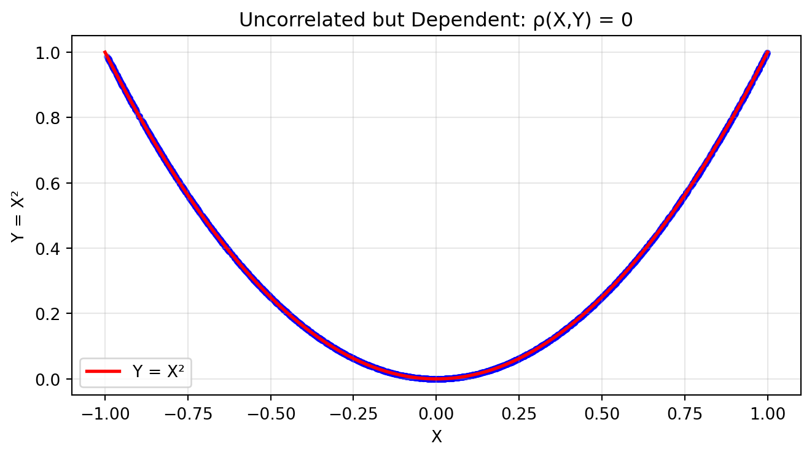

After completing this chapter, you will be able to:
Explain the concept of expectation and its role in summarizing distributions and machine learning.
Apply key properties of expectation, especially its linearity, to simplify complex calculations.
Calculate and interpret variance, covariance, and correlation as measures of spread and linear dependence.
Extend expectation concepts to random vectors, including mean vectors and covariance matrices.
Define and apply conditional expectation and understand its key properties.
Note
This chapter covers expectation, variance, and related concepts essential for statistical inference. The material is adapted and expanded from Chapter 3 of Wasserman (2013), which interested readers are encouraged to consult directly.
2.2 Introduction and Motivation
2.2.1 The Essence of Supervised Machine Learning
The fundamental goal of supervised machine learning is seemingly simple: train a model that makes successful predictions on new, unseen data. However, this goal hides a deeper challenge that lies at the heart of statistics.
When we train a model, we work with a finite training set: X_1, \ldots, X_n \sim F_X
where F_X is the data generating distribution. Our true objective is to find a model that minimizes the expected loss: \mathbb{E}[L(X)]
over the entire distribution F_X, where L(\cdot) is some suitable loss function. But we can only compute the empirical loss: \frac{1}{n} \sum_{i=1}^n L(X_i),
which is the loss function summed over the training data.
This gap between what we want (expected loss) and what we can calculate (empirical loss) is the central challenge of machine learning. The concept of expectation provides the mathematical framework to understand and bridge this gap.
Goal: Imagine training a neural network to classify
cat and dog images.
You have 10,000 training images, but your model needs to work on
millions of future images it’s never seen. When your model achieves 98%
accuracy on training data, that’s just the average over your specific
10,000 images. What you really care about is the accuracy over all
possible cat and dog images that exist or could exist.
This gap—between what we can measure (training performance) and what
we want (real-world performance)—is why expectation is central to
machine learning. Every loss function is secretly an expectation!
The cross-entropy loss used for classification tasks
measures how “surprised” your model is by the true labels. Lower
surprise = better predictions. The key insight: we minimize the
average surprise over our training data, hoping it approximates
the expected surprise over all possible data.
Setup: We want to classify images as cats
(\(y=1\)) or dogs
(\(y=0\)).
Our model outputs:
\[ \hat{p}(x) = \text{predicted probability that image } x \text{ is a cat.} \]
Step 1: Define the loss for one example
For a single image-label pair
\((x, y)\), the cross-entropy loss is:
\[L(x, y) = -[y \log(\hat{p}(x)) + (1-y) \log(1-\hat{p}(x))]\]
This penalizes wrong predictions:
If \(y = 1\) (cat) but
\(\hat{p}(x) \approx 0\): large
loss
If \(y = 0\) (dog) but
\(\hat{p}(x) \approx 1\): large
loss
Correct predictions → small loss
Step 2: The fundamental problem
What we want to minimize (expected loss over all possible images):
\[R_{\text{true}} = \mathbb{E}_{(X,Y)}[L(X, Y)]\]
What we can compute (average loss over training data):
\[R_{\text{train}} = \frac{1}{n} \sum_{i=1}^n L(x_i, y_i)\]
Step 3: The connection to expectation
Notice that \(R_{\text{train}}\) is
just the sample mean of the losses, while
\(R_{\text{true}}\) is the
expectation of the loss. By the Law of Large Numbers:
\[R_{\text{train}} \xrightarrow{n \to \infty} R_{\text{true}}\]
This is why machine learning is fundamentally about
expectation!
Let’s see cross-entropy loss in action with a simple cat/dog
classifier. We’ll simulate predictions and compute both the loss on a
small training set and the true expected loss over the entire
population.
Note that in this example we are not training a model. We
are given a model, and we want to compute its loss. What we see is how
close the empirical loss is to the expected loss as we change the
dataset size over which we compute the loss.
import numpy as npimport matplotlib.pyplot as plt# Simulate a simple "classifier" that predicts cat probability based on # a single feature (e.g., "ear pointiness" from 0 to 1)np.random.seed(42)# True probabilities: cats have pointier earsdef true_cat_probability(ear_pointiness):# Logistic function: more pointy → more likely catreturn1/ (1+ np.exp(-5* (ear_pointiness -0.5)))# Generate population datan_population =10000ear_pointiness = np.random.uniform(0, 1, n_population)true_probs = true_cat_probability(ear_pointiness)# Sample actual labels based on true probabilitieslabels = (np.random.random(n_population) < true_probs).astype(int)# Our (imperfect) model's predictionsdef model_prediction(x):# Slightly wrong sigmoid (shifted and less steep)return1/ (1+ np.exp(-3* (x -0.45)))# Compute cross-entropy lossdef cross_entropy_loss(y_true, y_pred):# Avoid log(0) with small epsilon eps =1e-7 y_pred = np.clip(y_pred, eps, 1- eps)return-(y_true * np.log(y_pred) + (1- y_true) * np.log(1- y_pred))# Show what training sees vs realityfig, (ax1, ax2) = plt.subplots(1, 2, figsize=(7, 5))# Left: Model predictions vs truthx_plot = np.linspace(0, 1, 100)ax1.plot(x_plot, true_cat_probability(x_plot), 'g-', linewidth=3, label='True P(cat|x)')ax1.plot(x_plot, model_prediction(x_plot), 'b--', linewidth=2, label='Model P̂(cat|x)')ax1.scatter(ear_pointiness[:100], labels[:100], alpha=0.3, s=20, c=['red'if l ==0else'blue'for l in labels[:100]])ax1.set_xlabel('Ear Pointiness')ax1.set_ylabel('Probability of Cat')ax1.set_title('Model vs Reality')ax1.legend()ax1.grid(True, alpha=0.3)# Right: Empirical vs Expected Losstraining_sizes = [10, 50, 100, 500, 1000, 5000]empirical_losses = []for n in training_sizes:# Sample n training examples idx = np.random.choice(n_population, n, replace=False) train_x = ear_pointiness[idx] train_y = labels[idx] train_pred = model_prediction(train_x)# Empirical loss on training set emp_loss = np.mean(cross_entropy_loss(train_y, train_pred)) empirical_losses.append(emp_loss)# True expected loss over entire populationall_predictions = model_prediction(ear_pointiness)expected_loss = np.mean(cross_entropy_loss(labels, all_predictions))ax2.semilogx(training_sizes, empirical_losses, 'bo-', linewidth=2, markersize=8, label='Empirical Loss (Training)')ax2.axhline(y=expected_loss, color='red', linestyle='--', linewidth=2, label=f'Expected Loss = {expected_loss:.3f}')ax2.set_xlabel('Training Set Size')ax2.set_ylabel('Cross-Entropy Loss')ax2.set_title('Convergence to Expected Loss')ax2.legend()ax2.grid(True, alpha=0.3)plt.tight_layout()plt.show()print(f"With just 10 samples: empirical loss = {empirical_losses[0]:.3f}")print(f"With 5000 samples: empirical loss = {empirical_losses[-1]:.3f}")print(f"True expected loss: {expected_loss:.3f}")print(f"\nAs we get more training data to calculate the loss, our empirical")print(f"loss estimate gets closer to the true expected loss we care about!")
With just 10 samples: empirical loss = 0.680
With 5000 samples: empirical loss = 0.535
True expected loss: 0.542
As we get more training data to calculate the loss, our empirical
loss estimate gets closer to the true expected loss we care about!
2.2.2 Why Expectation Matters in ML and Beyond
The concept of expectation appears throughout data science and statistics:
Statistical Inference: Estimating population parameters from samples
Decision Theory: Maximizing expected utility or minimizing expected risk
A/B Testing: Measuring expected treatment effects
Financial Modeling: Expected returns and risk assessment
Loss Functions in Deep Learning: Cross-entropy loss and ELBO in VAEs
In each case, we’re trying to understand average behavior over some distribution, which is precisely what expectation captures.
2.3 Foundations of Expectation
Finnish Terminology Reference
For Finnish-speaking students, here’s a reference table of key terms in this chapter:
English
Finnish
Context
Expected value/Expectation
Odotusarvo
The mean of a distribution
Mean
Keskiarvo
Same as expectation
Variance
Varianssi
Measure of spread
Standard deviation
Keskihajonta
Square root of variance
Covariance
Kovarianssi
Linear relationship between variables
Correlation
Korrelaatio
Standardized covariance
Sample mean
Otoskeskiarvo
Average of data points
Sample variance
Otosvarianssi
Empirical measure of spread
Conditional expectation
Ehdollinen odotusarvo
Mean given information
Moment
Momentti
Powers of random variable
Random vector
Satunnaisvektori
Vector of random variables
Covariance matrix
Kovarianssimatriisi
Matrix of covariances
Precision matrix
Tarkkuusmatriisi
Inverse of covariance matrix
Moment generating function
Momenttigeneroiva funktio
Transform for finding moments
Central moment
Keskusmomentti
Moment about the mean
2.3.1 Definition and Basic Properties
The expected value, or mean, or first moment of a random variable X is defined to be: \mathbb{E}(X) = \begin{cases}
\sum_x x \mathbb{P}(X = x) & \text{if } X \text{ is discrete} \\
\int_{\mathbb{R}} x f_X(x) \, dx & \text{if } X \text{ is continuous}
\end{cases} assuming the sum (or integral) is well defined. We use the following notation interchangeably: \mathbb{E}(X) = \mathbb{E} X = \mu = \mu_X
The expectation represents the average value of the distribution – the balance point where the distribution would balance if it were a physical object.
Notation: The lowercase Greek letter \mu (mu; pronounced mju) is universally used to denote the mean.
Simplified Notation
In this course, we will write the expectation using the simplified notation:
\mathbb{E}(X) = \int x f_X(x) dx
when the type of random variable is unspecified and could be either continuous or discrete.
For a discrete random variable, you would substitute the integral with a sum, and the PDF f_X(x) (probability density function) with the PMF \mathbb{P}_X(x) (probability mass function), as seen in Chapter 1 of the lecture notes.
Note that this is an abuse of notation and is not mathematically correct, but we found it to be more intuitive in previous iterations of the course.
Example: Simple Expectations
Let’s calculate expectations for some basic distributions:
Expectation is the “center of mass” of a distribution. Imagine:
Physical analogy: If you made a histogram out of metal,
the expected value is where you’d place a fulcrum to balance it
perfectly.
Long-run average: If you repeat an experiment
millions of times and average the results, you’ll get very close to the
expectation. This isn’t just intuition—it’s a theorem (the Law of Large
Numbers) we’ll prove in Chapter 3.
Fair price: In gambling, the expectation tells
you the fair price to pay for a game. If a lottery ticket has expected
winnings of €2, then €2 is the break-even price.
Think of expectation as answering: “If I had to summarize this entire
distribution with a single number pointing at its center, what
would it be?” The expectation or mean is not the only number we
could use to represent the center of a distribution, but it is a very
common choice suitable for most situations.
The expectation is a linear functional on the space of random
variables. For a random variable \(X\)
with distribution function \(F\), the
correct mathematical notation would be:
\[\mathbb{E}(X) = \int x \, dF(x)\]
This notation correctly unifies the discrete and continuous
cases:
For discrete \(X\): the integral
becomes a sum over the jump points of
\(F\)
For continuous \(X\): we have
\(dF(x) = f_X(x)dx\)
This notation is particularly useful when dealing with mixed
distributions or when stating results that apply to both discrete and
continuous random variables without writing separate formulas. We won’t
be using this notation in the course, but you may find it in
mathematical or statistical textbooks, including Wasserman (2013).
Let’s demonstrate expectation through simulation, showing how sample
averages converge to the true expectation. We’ll also show a case where
expectation doesn’t exist (see next section).
import numpy as npimport matplotlib.pyplot as pltfrom scipy.stats import cauchy# Set up figure with subplotsfig, (ax1, ax2) = plt.subplots(2, 1, figsize=(7, 8))# 1. Convergence for Bernoulli(0.3)np.random.seed(42)p =0.3n_flips =40000flips = np.random.choice([0, 1], size=n_flips, p=[1-p, p])running_mean = np.cumsum(flips) / np.arange(1, n_flips +1)ax1.plot(running_mean, linewidth=2, alpha=0.8, color='blue')ax1.axhline(y=p, color='red', linestyle='--', label=f'True E[X] = {p}', linewidth=2)ax1.set_xlabel('Number of trials')ax1.set_ylabel('Sample mean')ax1.set_title('Sample Mean Converges to Expectation: Bernoulli(0.3)')ax1.legend()ax1.grid(True, alpha=0.3)ax1.set_ylim(0.2, 0.4)# 2. Cauchy distribution - no expectation existsn_samples =40000cauchy_samples = cauchy.rvs(size=n_samples, random_state=42)cauchy_running_mean = np.cumsum(cauchy_samples) / np.arange(1, n_samples +1)ax2.plot(cauchy_running_mean, linewidth=2, alpha=0.8, color='green')ax2.axhline(y=0, color='black', linestyle=':', alpha=0.5)ax2.set_xlabel('Number of samples')ax2.set_ylabel('Sample mean')ax2.set_title('Cauchy Distribution: Sample Mean Does Not Converge (No Expectation)')ax2.grid(True, alpha=0.3)ax2.set_ylim(-10, 10)plt.tight_layout()plt.show()print(f"Bernoulli: After {n_flips} flips, sample mean = {running_mean[-1]:.4f}")print(f"Cauchy: After {n_samples} samples, sample mean = {cauchy_running_mean[-1]:.4f}")print("Notice how Cauchy's sample mean keeps eventually jumping around,")print("even when you think it's converging to zero!")
Bernoulli: After 40000 flips, sample mean = 0.2969
Cauchy: After 40000 samples, sample mean = -2.9548
Notice how Cauchy's sample mean keeps eventually jumping around,
even when you think it's converging to zero!
2.3.2 Existence of Expectation
Not all random variables have well-defined expectations.
The expectation \mathbb{E}(X) exists if and only if: \mathbb{E}(|X|) = \int |x| f_X(x) \, dx < \infty
The Cauchy Distribution
The Cauchy distribution is a classic example of probability density with no expectation:
Extreme observations are common due to heavy tails
2.3.3 Expectation of Functions
Often we need the expectation of a function of a random variable. The “Rule of the Lazy Statistician” saves us from finding the distribution of the transformed variable.
Let Y = r(X). Then: \mathbb{E}(Y) = \mathbb{E}(r(X)) = \int r(x) f_X(x) \, dx
This result is incredibly useful—we can find \mathbb{E}(Y) without determining f_Y(y)!
Example: Breaking a Stick
A stick of unit length is broken at a random point. What’s the expected length of the longer piece?
Let X \sim \text{Uniform}(0,1) be the break point. The longer piece has length: Y = r(X) = \max\{X, 1-X\}
Special case: Probability as expectation of indicator functions.
If A is an event and the indicator function is defined as: I_A(x) = \begin{cases}
1 & \text{if } x \in A \\
0 & \text{if } x \notin A
\end{cases} then: \mathbb{E}(I_A(X)) = \mathbb{P}(X \in A)
This shows that probability is just a special case of expectation!
This trick of using the indicator function with expectations is used commonly in probability, statistics and machine learning.
2.4 Properties of Expectation
2.4.1 The Linearity Property
If X_1, \ldots, X_n are random variables and a_1, \ldots, a_n are constants, then: \mathbb{E}\left(\sum_{i=1}^n a_i X_i\right) = \sum_{i=1}^n a_i \mathbb{E}(X_i)
Possibly The Most Important Result in This Course
Expectation is LINEAR!
This property:
Works WITHOUT independence (unlike the product rule)
Simplifies hard calculations
Is the key to understanding sampling distributions
Will be used in almost every proof and application
If you remember only one thing from this chapter, remember that expectation is linear. You’ll use it constantly throughout statistics and machine learning!
2.4.2 Applications of Linearity
The power of linearity becomes clear when we use it to solve problems that would be difficult otherwise.
Example: Binomial Mean via Indicator Decomposition
Let X \sim \text{Binomial}(n, p). Finding \mathbb{E}(X) directly requires evaluating: \mathbb{E}(X) = \sum_{x=0}^n x \binom{n}{x} p^x (1-p)^{n-x}
Have fun calculating this! But with linearity, it’s trivial.
Remember that \text{Binomial}(n, p) is the distribution of the sum of n\text{Bernoulli}(p) random variables.
Thus, we can write X = \sum_{i=1}^n X_i, where X_i are independent Bernoulli(p) indicators.
With this, we have: \mathbb{E}(X) = \mathbb{E}\left(\sum_{i=1}^n X_i\right) = \sum_{i=1}^n \mathbb{E}(X_i) = \sum_{i=1}^n p = np
Done!
Example: Linearity Works Even with Dependent Variables
A common misconception is that linearity of expectation requires independence. It doesn’t! Let’s demonstrate this crucial fact by computing \mathbb{E}[2X + 3Y] where X and Y are strongly correlated.
We’ll generate X and Y with correlation 0.8 (highly dependent!) and verify that linearity still holds:
Show code
# Demonstrating linearity even with dependenceimport numpy as npimport matplotlib.pyplot as pltnp.random.seed(42)n_sims =10000# Generate correlated X and Ymean = [2, 3]cov = [[1, 0.8], [0.8, 1]] # Correlation = 0.8samples = np.random.multivariate_normal(mean, cov, n_sims)X = samples[:, 0]Y = samples[:, 1]# Compute E[2X + 3Y] empiricallyZ =2*X +3*Yempirical_mean = np.mean(Z)# Theoretical value using linearitytheoretical_mean =2*mean[0] +3*mean[1]plt.figure(figsize=(7, 4))plt.hist(Z, bins=50, density=True, alpha=0.7, color='green', edgecolor='black')plt.axvline(empirical_mean, color='blue', linestyle='-', linewidth=2, label=f'Empirical: {empirical_mean:.3f}')plt.axvline(theoretical_mean, color='red', linestyle='--', linewidth=2, label=f'Theoretical: {theoretical_mean:.3f}')plt.xlabel('2X + 3Y')plt.ylabel('Density')plt.title('Linearity of Expectation Works Even with Dependent Variables!')plt.legend()plt.grid(True, alpha=0.3)plt.tight_layout()plt.show()print(f"X and Y are dependent (correlation = 0.8)")print(f"But E[2X + 3Y] = 2E[X] + 3E[Y] still holds!")print(f"Theoretical: 2×{mean[0]} + 3×{mean[1]} = {theoretical_mean}")print(f"Empirical: {empirical_mean:.3f}")
X and Y are dependent (correlation = 0.8)
But E[2X + 3Y] = 2E[X] + 3E[Y] still holds!
Theoretical: 2×2 + 3×3 = 13
Empirical: 12.985
Key takeaway: Despite the strong correlation between X and Y, the empirical mean of 2X + 3Y matches the theoretical value 2\mathbb{E}[X] + 3\mathbb{E}[Y] perfectly. This is why linearity of expectation is so powerful—it works unconditionally!
Additional Examples: More Applications of Linearity
Expected Number of Fixed Points in Random Permutation:
In a random permutation of {1, 2, …, n}, what’s the expected number of elements that stay in their original position?
Let X_i = 1 if element i stays in position i, and 0 otherwise. The total number of fixed points is X = \sum_{i=1}^n X_i.
For any position i: \mathbb{P}(X_i = 1) = \frac{1}{n} (element i has probability 1/n of being in position i).
Amazing! No matter how large n is, we expect exactly 1 fixed point on average.
Fortune Doubling Game (from Wasserman Exercise 3.1):
You start with c dollars. On each play, you either double your money or halve it, each with probability 1/2. What’s your expected fortune after n plays?
Let X_i be your fortune after i plays. Then: - X_0 = c - X_{i+1} = 2X_i with probability 1/2 - X_{i+1} = X_i/2 with probability 1/2
By the law of iterated expectations: \mathbb{E}(X_{i+1}) = \mathbb{E}[\mathbb{E}(X_{i+1} | X_i)] = \mathbb{E}(X_i)
Therefore, by induction: \mathbb{E}(X_n) = \mathbb{E}(X_0) = c
Your expected fortune never changes! This is an example of a martingale—a fair game where the expected future value equals the current value.
2.4.3 Independence and Products
While expectation is linear for all random variables, products require independence.
If X_1, \ldots, X_n are independent random variables, then: \mathbb{E}\left(\prod_{i=1}^n X_i\right) = \prod_{i=1}^n \mathbb{E}(X_i)
Warning
This ONLY works with independent random variables! As a clear counterexample, \mathbb{E}(X^2) \neq (\mathbb{E}(X))^2 in general, since X and X are clearly not independent.
2.5 Variance and Its Properties
2.5.1 Measuring Spread
While expectation tells us the center of a distribution, variance measures how “spread out” it is.
Let X be a random variable with mean \mu. The variance of X – denoted by \sigma^2, \sigma_X^2, \mathbb{V}(X), \mathbb{V}X or \text{Var}(X) – is defined as: \sigma^2 = \mathbb{V}(X) = \mathbb{E}[(X - \mu)^2] assuming this expectation exists. The standard deviation is
\mathrm{sd}(X) = \sqrt{\mathbb{V}(X)}
and is also denoted by \sigma and \sigma_X.
Notation: The lowercase Greek letter \sigma (sigma) is almost universally used to denote the standard deviation (and more generally the “scale” of a distribution, related to its spread).
Why Both Variance and Standard Deviation?
Variance (\sigma^2) is in squared units—if X measures height in cm, then \mathbb{V}(X) is in cm². This makes it hard to interpret directly.
Standard deviation (\sigma) is in the same units as X, making it more interpretable: “typical deviation from the mean.”
So why use variance at all? Variance works better for doing math because:
It has nicer properties (like additivity for independent variables, as we will see later)
It appears naturally in formulas and proofs
It’s easier to manipulate algebraically
In short: we do calculations with variance, then take the square root for interpretation.
Think of variance as measuring how wrong your guess will
typically be if you always guess the mean.
Imagine predicting tomorrow’s temperature. If you live in Nice or
Lisbon (low variance), guessing the average temperature works well
year-round. If you live in Helsinki or Berlin (high variance), that same
strategy leads to large errors – you’ll be way off in both summer and
winter.
Standard deviation puts this in interpretable
units:
Low \(\sigma\): Your guesses are
usually close (precise manufacturing, stable processes)
High \(\sigma\): Your guesses are
often far off (volatile stocks, unpredictable weather)
The famous 68-95-99.7 rule tells us that for
bell-shaped data:
68% of observations fall within
1\(\sigma\) of the mean
95% fall within 2\(\sigma\)
99.7% fall within 3\(\sigma\)
This is why “3-sigma events” are considered rare outliers in quality
control.
(This rule is exactly true for normally-distributed
data.)
Variance has an elegant mathematical interpretation as the
expected squared distance from the mean:
\[\mathbb{V}(X) = \mathbb{E}[(X - \mu)^2]\]
This squared distance has deep connections:
Minimization property: The mean
\(\mu\) minimizes
\(\mathbb{E}[(X - c)^2]\) over all
constants \(c\)
Pythagorean theorem: For independent
\(X, Y\):
\[\mathbb{V}(X + Y) = \mathbb{V}(X) + \mathbb{V}(Y)\]
Just like \(|a + b|^2 = |a|^2 + |b|^2\)
for perpendicular vectors!
Information theory: Variance of a Gaussian
determines its entropy (uncertainty)
The quadratic nature (\(a^2\)
scaling) reflects that variance measures squared deviations:
doubling the scale quadruples the variance.
Let’s visualize how variance controls the spread of a distribution,
using exam scores as an example.
import numpy as npimport matplotlib.pyplot as pltfrom scipy import stats# Set up the plotfig, ax = plt.subplots(figsize=(7, 4))# Common mean for all distributionsmean =75x = np.linspace(40, 110, 1000)# Three different standard deviationssigmas = [5, 10, 20]colors = ['#2E86AB', '#A23B72', '#F18F01']labels = ['σ = 5 (Low variance)', 'σ = 10 (Medium variance)', 'σ = 20 (High variance)']# Plot each distributionfor sigma, color, label inzip(sigmas, colors, labels): y = stats.norm.pdf(x, mean, sigma) ax.plot(x, y, color=color, linewidth=2.5, label=label)# Shade ±1σ region x_fill = x[(x >= mean - sigma) & (x <= mean + sigma)] y_fill = stats.norm.pdf(x_fill, mean, sigma) ax.fill_between(x_fill, y_fill, alpha=0.2, color=color)# Add vertical line at meanax.axvline(mean, color='black', linestyle='--', alpha=0.7, linewidth=1.5)ax.text(mean +1, 0.085, 'Mean = 75', ha='left', va='bottom')# Stylingax.set_xlabel('Exam Score')ax.set_ylabel('Probability Density')ax.set_title('Same Mean, Different Variances: The Effect of Standard Deviation')ax.legend(loc='upper left')ax.set_xlim(40, 110)ax.set_ylim(0, 0.09)ax.grid(True, alpha=0.3)# Add annotations for interpretationax.annotate('68% of scores\nwithin ±σ', xy=(mean +5, 0.055), xytext=(mean +12, 0.065), arrowprops=dict(arrowstyle='->', color='#2E86AB', alpha=0.7), fontsize=9, ha='center', color='#2E86AB')plt.tight_layout()plt.show()print("Interpreting the visualization:")print("• Small σ (blue): Scores cluster tightly around 75. Most students perform similarly.")print("• Medium σ (pink): Moderate spread. Typical variation in a well-designed exam.")print("• Large σ (orange): Wide spread. Large differences in student performance.")print(f"\nFor any normal distribution, about 68% of values fall within ±1σ of the mean.")
Interpreting the visualization:
• Small σ (blue): Scores cluster tightly around 75. Most students perform similarly.
• Medium σ (pink): Moderate spread. Typical variation in a well-designed exam.
• Large σ (orange): Wide spread. Large differences in student performance.
For any normal distribution, about 68% of values fall within ±1σ of the mean.
Let’s visualize how subtracting independent variables increases variance, while subtracting dependent variables can reduce it – to the point that substracting perfectly correlated variables completely eliminates any variance!
Show code
# Visualizing Var(X-Y) = Var(X) + Var(Y) for independent variablesimport numpy as npimport matplotlib.pyplot as pltnp.random.seed(42)n =10000# Independent caseX_indep = np.random.normal(0, 1, n) # Var = 1Y_indep = np.random.normal(0, 1, n) # Var = 1diff_indep = X_indep - Y_indep # Var should be 2# Perfectly correlated case (not independent)X_corr = np.random.normal(0, 1, n)Y_corr = X_corr # Perfect correlationdiff_corr = X_corr - Y_corr # Should be 0fig, (ax1, ax2) = plt.subplots(1, 2, figsize=(7, 5))# Independent caseax1.hist(diff_indep, bins=50, density=True, alpha=0.7, color='blue', edgecolor='black')ax1.set_xlabel('X - Y')ax1.set_ylabel('Density')ax1.set_title(f'Independent: Var(X-Y) = {np.var(diff_indep, ddof=1):.3f} ≈ 2')ax1.set_xlim(-6, 6)# Correlated caseax2.hist(diff_corr, bins=50, density=True, alpha=0.7, color='red', edgecolor='black')ax2.set_xlabel('X - Y')ax2.set_ylabel('Density')ax2.set_title(f'Perfect Correlation: Var(X-Y) = {np.var(diff_corr, ddof=1):.3f} ≈ 0')ax2.set_xlim(-6, 6)plt.tight_layout()plt.show()print("When X and Y are independent N(0,1):")print(f" Var(X) = {np.var(X_indep, ddof=1):.3f}")print(f" Var(Y) = {np.var(Y_indep, ddof=1):.3f}")print(f" Var(X-Y) = {np.var(diff_indep, ddof=1):.3f} ≈ Var(X) + Var(Y) = 2")print("\nWhen Y = X (perfect dependence):")print(f" Var(X-Y) = Var(0) = 0")
When X and Y are independent N(0,1):
Var(X) = 1.007
Var(Y) = 1.002
Var(X-Y) = 2.026 ≈ Var(X) + Var(Y) = 2
When Y = X (perfect dependence):
Var(X-Y) = Var(0) = 0
Example: Variance of Binomial via Decomposition
Let X \sim \text{Binomial}(n, p). We already know \mathbb{E}(X) = np. What’s the variance?
Solution
Write X = \sum_{i=1}^n X_i where X_i \sim \text{Bernoulli}(p) independently.
For a single Bernoulli:
\mathbb{E}(X_i) = p
\mathbb{E}(X_i^2) = 0^2 \cdot (1-p) + 1^2 \cdot p = p
When we observe data, we compute sample statistics to estimate population parameters.
Recall from our introduction: we have a sampleX_1, \ldots, X_n drawn from a population distribution F_X. The population has true parameters (like \mu = \mathbb{E}(X) and \sigma^2 = \mathbb{V}(X)) that we want to know, but we can only compute statistics from our finite sample. This gap between what we can calculate and what we want to know is fundamental to statistics.
Given random variables X_1, \ldots, X_n:
The sample mean is: \bar{X}_n = \frac{1}{n} \sum_{i=1}^n X_i
The sample variance is: S_n^2 = \frac{1}{n-1} \sum_{i=1}^n (X_i - \bar{X}_n)^2
Note the n-1 in the denominator of the sample variance. This makes it an unbiased estimator of the population variance (see below).
Let X_1, \ldots, X_n be IID with \mu = \mathbb{E}(X_i) and \sigma^2 = \mathbb{V}(X_i). Then: \mathbb{E}(\bar{X}_n) = \mu, \quad \mathbb{V}(\bar{X}_n) = \frac{\sigma^2}{n}, \quad \mathbb{E}(S_n^2) = \sigma^2
This theorem tells us:
The sample mean is unbiased (its expectation is equal to the population mean)
Its variance decreases as n increases
The sample variance (with n-1) is unbiased
Wait, What Does “Unbiased” Mean?
An estimator or sample statistic is unbiased if its expected value equals the parameter it’s trying to estimate.
As stated above, \bar{X}_n is unbiased for \mu because \mathbb{E}(\bar{X}_n) = \mu
S_n^2 (with n-1) is unbiased for \sigma^2 because \mathbb{E}(S_n^2) = \sigma^2
If we used n instead of n-1 at the denominator, we’d get \mathbb{E}(S_n^2) = \frac{n-1}{n}\sigma^2 < \sigma^2 (biased!)
Being unbiased means that on average across many sets of samples, our sample statistic would match the true value – though any individual estimate may be too high or too low. This also doesn’t tell us anything about the rate of convergence – how fast the estimator converges to the true value.
2.7 Covariance and Correlation
2.7.1 Linear Relationships
When we have two random variables, we often want to measure how they vary together and quantify the strength of their linear relation.
Let X and Y be random variables with means \mu_X and \mu_Y and standard deviations \sigma_X and \sigma_Y. The covariance between X and Y is: \mathrm{Cov}(X, Y) = \mathbb{E}[(X - \mu_X)(Y - \mu_Y)]
The correlation is: \rho = \rho_{X,Y} = \rho(X, Y) = \frac{\mathrm{Cov}(X, Y)}{\sigma_X \sigma_Y}
2.7.2 Properties of Covariance and Correlation
The covariance can be rewritten as: \mathrm{Cov}(X, Y) = \mathbb{E}(XY) - \mathbb{E}(X)\mathbb{E}(Y)
The correlation satisfies: -1 \leq \rho(X, Y) \leq 1
The correlation is a sort of “normalized covariance”. By dividing the covariance by \sigma_X and \sigma_Y, we remove the magnitude (and units/scale) of the two random variables, and what remains is a pure number that measures of how much they change together on average, in a range from -1 to 1.
Covariance and correlation further satisfy the following properties:
If Y = aX + b for constants a, b: \rho(X, Y) = \begin{cases}
1 & \text{if } a > 0 \\
-1 & \text{if } a < 0
\end{cases}
If X and Y are independent: \mathrm{Cov}(X, Y) = \rho = 0
The converse is NOT true in general!
Warning
Common Misconception: Uncorrelated ≠ Independent!
Independence implies zero correlation, but zero correlation does NOT imply independence.
Example: Uncorrelated but Dependent
Let X \sim \text{Uniform}(-1, 1) and Y = X^2.
These two random variables are clearly dependent (knowing X determines Y exactly!), but:
So X and Y are uncorrelated despite being perfectly dependent!
The plot below shows X and Y. See also this article on Scientific American for more examples.
Show code
# Visualizing uncorrelated but dependent variablesimport numpy as npimport matplotlib.pyplot as pltnp.random.seed(42)n =2000# X ~ Uniform(-1, 1), Y = X²X = np.random.uniform(-1, 1, n)Y = X**2plt.figure(figsize=(7, 4))plt.scatter(X, Y, alpha=0.5, s=10, color='blue')plt.xlabel('X')plt.ylabel('Y = X²')plt.title('Uncorrelated but Dependent: ρ(X,Y) = 0')plt.grid(True, alpha=0.3)# Add the parabolax_line = np.linspace(-1, 1, 100)y_line = x_line**2plt.plot(x_line, y_line, 'r-', linewidth=2, label='Y = X²')plt.legend()plt.tight_layout()plt.show()print("Y is completely determined by X, yet they are uncorrelated!")print("This is because the linear association is zero due to symmetry.")

Y is completely determined by X, yet they are uncorrelated!
This is because the linear association is zero due to symmetry.
2.7.3 Variance of Sums (General Case)
We saw in Section 2.5.2 that for independent variables,
The inverse \boldsymbol{\Sigma}^{-1} is called the precision matrix.
Notation: The uppercase Greek letter \Sigma (sigma) is almost invariably used to denote a covariance matrix. Note that the lowercase\sigma denotes the standard deviation.
2.8.2 Covariance Matrix Properties
The covariance matrix can be written compactly as: \boldsymbol{\Sigma} = \mathbb{E}[(\mathbf{X} - \boldsymbol{\mu})(\mathbf{X} - \boldsymbol{\mu})^T]
An alternative formula for the covariance matrix is: \boldsymbol{\Sigma} = \mathbb{E}(\mathbf{X}\mathbf{X}^T) - \boldsymbol{\mu}\boldsymbol{\mu}^T
Proof
Starting from the definition: \begin{align}
\boldsymbol{\Sigma} &= \mathbb{E}[(\mathbf{X} - \boldsymbol{\mu})(\mathbf{X} - \boldsymbol{\mu})^T] \\
&= \mathbb{E}[\mathbf{X}\mathbf{X}^T - \mathbf{X}\boldsymbol{\mu}^T - \boldsymbol{\mu}\mathbf{X}^T + \boldsymbol{\mu}\boldsymbol{\mu}^T] \\
&= \mathbb{E}(\mathbf{X}\mathbf{X}^T) - \mathbb{E}(\mathbf{X})\boldsymbol{\mu}^T - \boldsymbol{\mu}\mathbb{E}(\mathbf{X}^T) + \boldsymbol{\mu}\boldsymbol{\mu}^T \\
&= \mathbb{E}(\mathbf{X}\mathbf{X}^T) - \boldsymbol{\mu}\boldsymbol{\mu}^T - \boldsymbol{\mu}\boldsymbol{\mu}^T + \boldsymbol{\mu}\boldsymbol{\mu}^T \\
&= \mathbb{E}(\mathbf{X}\mathbf{X}^T) - \boldsymbol{\mu}\boldsymbol{\mu}^T
\end{align} where we used the fact that \mathbb{E}(\mathbf{X}) = \boldsymbol{\mu} and the linearity of expectation.
Positive semi-definite: \mathbf{a}^T\boldsymbol{\Sigma}\mathbf{a} \geq 0 for all \mathbf{a}
Diagonal elements are variances (non-negative)
Off-diagonal elements are covariances
2.8.3 Linear Transformations
If \mathbf{X} has mean \boldsymbol{\mu} and covariance \boldsymbol{\Sigma}, and \mathbf{A} is a matrix: \mathbb{E}(\mathbf{A}\mathbf{X}) = \mathbf{A}\boldsymbol{\mu}\mathbb{V}(\mathbf{A}\mathbf{X}) = \mathbf{A}\boldsymbol{\Sigma}\mathbf{A}^T
Proof of the Variance Formula
Using the definition of variance for vectors and the fact that \mathbb{E}(\mathbf{A}\mathbf{X}) = \mathbf{A}\boldsymbol{\mu}: \begin{align}
\mathbb{V}(\mathbf{A}\mathbf{X}) &= \mathbb{E}[(\mathbf{A}\mathbf{X} - \mathbf{A}\boldsymbol{\mu})(\mathbf{A}\mathbf{X} - \mathbf{A}\boldsymbol{\mu})^T] \\
&= \mathbb{E}[\mathbf{A}(\mathbf{X} - \boldsymbol{\mu})(\mathbf{A}(\mathbf{X} - \boldsymbol{\mu}))^T] \\
&= \mathbb{E}[\mathbf{A}(\mathbf{X} - \boldsymbol{\mu})(\mathbf{X} - \boldsymbol{\mu})^T\mathbf{A}^T] \\
&= \mathbf{A}\mathbb{E}[(\mathbf{X} - \boldsymbol{\mu})(\mathbf{X} - \boldsymbol{\mu})^T]\mathbf{A}^T \\
&= \mathbf{A}\boldsymbol{\Sigma}\mathbf{A}^T
\end{align} where we used the fact that \mathbf{A} is a constant matrix that can be taken outside the expectation.
Similarly, for a vector \mathbf{a} (this is just a special case of the equations above – why?): \mathbb{E}(\mathbf{a}^T\mathbf{X}) = \mathbf{a}^T\boldsymbol{\mu}\mathbb{V}(\mathbf{a}^T\mathbf{X}) = \mathbf{a}^T\boldsymbol{\Sigma}\mathbf{a}
2.8.4 Interpreting the Covariance Matrix
The covariance matrix encodes the second-order structure of a random vector—that is, how the variables vary and co-vary together. To understand this structure, we can examine its spectral decomposition (eigendecomposition).
Imagine your data as a cloud of points in space. This cloud rarely
forms a perfect sphere—it’s usually stretched more in some directions
than others, like an ellipse or ellipsoid.
The covariance matrix captures this shape:
Eigenvectors are the “natural axes” of your data
cloud—the directions along which it stretches
Eigenvalues tell you how much the cloud stretches
in each direction
The largest eigenvalue corresponds to the direction of greatest
spread
This is like finding the best way to orient a box around your
data:
The box edges align with the eigenvectors
The box dimensions are proportional to the square roots of
eigenvalues
Principal Component Analysis (PCA) uses this
insight: keep the directions with large spread (high variance), discard
those with little spread. This reduces dimensions while preserving most
of the data’s structure.
Since \(\boldsymbol{\Sigma}\) is
symmetric and positive semi-definite, recall from earlier linear algebra
classes that it has spectral decomposition:
\[\boldsymbol{\Sigma} = \sum_{i=1}^k \lambda_i \mathbf{v}_i \mathbf{v}_i^T\]
where:
\(\lambda_1 \geq \lambda_2 \geq \cdots \geq \lambda_k \geq 0\)
are the eigenvalues (which we can order from larger to
smaller)
\(\mathbf{v}_1, \mathbf{v}_2, \ldots, \mathbf{v}_k\)
are the corresponding orthonormal eigenvectors
This decomposition reveals the geometric structure of the data:
Eigenvalues\(\lambda_i\): represent the variance
along each principal axis
Eigenvectors\(\mathbf{v}_i\): define the directions
of these principal axes
Largest eigenvalue/vector: indicates the direction
of maximum variance in the data
Let’s visualize how eigendecomposition reveals the structure of
data:
import numpy as npimport matplotlib.pyplot as plt# Generate correlated 2D datanp.random.seed(42)mean = [2, 3]cov = [[2.5, 1.5], [1.5, 1.5]]data = np.random.multivariate_normal(mean, cov, 300)# Compute eigendecompositioneigenvalues, eigenvectors = np.linalg.eigh(cov)# Sort by eigenvalue (largest first)idx = eigenvalues.argsort()[::-1]eigenvalues = eigenvalues[idx]eigenvectors = eigenvectors[:, idx]# Plot the data and principal axesplt.figure(figsize=(7, 6))plt.scatter(data[:, 0], data[:, 1], alpha=0.5, s=30)# Plot eigenvectors from the meancolors = ['red', 'blue']for i inrange(2):# Scale eigenvector by sqrt(eigenvalue) for visualization v = eigenvectors[:, i] * np.sqrt(eigenvalues[i]) *1.96 plt.arrow(mean[0], mean[1], v[0], v[1], head_width=0.1, head_length=0.1, fc=colors[i], ec=colors[i], linewidth=2, label=f'PC{i+1}: λ={eigenvalues[i]:.2f}')# Also draw the negative direction plt.arrow(mean[0], mean[1], -v[0], -v[1], head_width=0.1, head_length=0.1, fc=colors[i], ec=colors[i], linewidth=2)plt.xlabel('X₁')plt.ylabel('X₂')plt.title('Principal Axes of the Covariance Matrix')plt.legend()plt.axis('equal')plt.grid(True, alpha=0.3)plt.tight_layout()plt.show()print(f"Covariance matrix:\n{np.array(cov)}")print(f"\nEigenvalues: {eigenvalues}")print(f"Eigenvectors (as columns):\n{eigenvectors}")print(f"\nThe first principal component explains {100*eigenvalues[0]/sum(eigenvalues):.1f}% of the variance")
Covariance matrix:
[[2.5 1.5]
[1.5 1.5]]
Eigenvalues: [3.58113883 0.41886117]
Eigenvectors (as columns):
[[-0.81124219 0.58471028]
[-0.58471028 -0.81124219]]
The first principal component explains 89.5% of the variance
The red arrow shows the first principal component (direction of
maximum variance), while the blue arrow shows the second. In the plot,
each eigenvector \(\mathbf{v}_i\) is
rescaled by \(1.96 \sqrt{\lambda_i}\)
which covers about \(95 \%\) of the
normal distribution.
In Principal Component Analysis (PCA), we might keep only the first
component to reduce from 2D to 1D while preserving most of the
structure.
Diagonal: \mathbb{V}(X_i) = np_i(1-p_i) (same as binomial)
Off-diagonal: \mathrm{Cov}(X_i, X_j) = -np_ip_j for i \neq j (always negative!)
Intuition: If more outcomes fall in category i, fewer can fall in category j
Special case: For a die roll with equal probabilities (p_i = 1/6 for all i):
\mathbb{V}(X_i) = n \cdot \frac{1}{6} \cdot \frac{5}{6} = \frac{5n}{36}
\mathrm{Cov}(X_i, X_j) = -n \cdot \frac{1}{6} \cdot \frac{1}{6} = -\frac{n}{36} for i \neq j
2.9 Conditional Expectation
2.9.1 Expectation Given Information
Conditional expectation captures how the mean changes when we have additional information. It is computed similarly to a regular expectation, just replacing the pdf (or PMF) with a conditional pdf (or PMF).
The conditional expectation of X given Y = y is: \mathbb{E}(X | Y = y) = \begin{cases}
\sum_x x \mathbb{P}_{X|Y}(x|y) & \text{discrete case} \\
\int x f_{X|Y}(x|y) \, dx & \text{continuous case}
\end{cases}
Warning
Subtle but Important:
\mathbb{E}(X) is a number
\mathbb{E}(X | Y = y) is a number (for fixed y)
\mathbb{E}(X | Y) is a random variable (because it’s a function of Y!)
2.9.2 Properties of Conditional Expectation
\mathbb{E}[\mathbb{E}(Y | X)] = \mathbb{E}(Y)
More generally, for any function r(x, y): \mathbb{E}[\mathbb{E}(r(X, Y) | X)] = \mathbb{E}(r(X, Y))
Proof of the Law of Iterated Expectations
We’ll prove the first equation. Using the definition of conditional expectation and the fact that the joint pdf can be written as f(x, y) = f_X(x) f_{Y|X}(y|x):
\begin{align}
\mathbb{E}[\mathbb{E}(Y | X)] &= \mathbb{E}\left[\int y f_{Y|X}(y|X) \, dy\right] \\
&= \int \left[\int y f_{Y|X}(y|x) \, dy\right] f_X(x) \, dx \\
&= \int \int y f_{Y|X}(y|x) f_X(x) \, dy \, dx \\
&= \int \int y f(x, y) \, dy \, dx \\
&= \int y \left[\int f(x, y) \, dx\right] dy \\
&= \int y f_Y(y) \, dy \\
&= \mathbb{E}(Y)
\end{align}
The key steps are:
\mathbb{E}(Y|X) is a function of X, so we take its expectation with respect to X
We can interchange the order of integration
f_{Y|X}(y|x) f_X(x) = f(x,y) by the definition of conditional probability
Integrating the joint pdf over x gives the marginal pdf f_Y(y)
This powerful result lets us compute expectations by conditioning on useful information.
Example: Breaking Stick Revisited
Imagine placing two random points on a unit stick. First, we place point X uniformly at random. Then, we place point Y uniformly at random between X and the end of the stick.
Formally: Draw X \sim \text{Uniform}(0, 1). After observing X = x, draw Y | X = x \sim \text{Uniform}(x, 1).
Question: What is the expected position of the second point Y?
Solution
We could find the marginal distribution of Y (which is complex), but it’s easier to use conditional expectation:
First, find \mathbb{E}(Y | X = x): \mathbb{E}(Y | X = x) = \frac{x + 1}{2} This makes sense: given X = x, point Y is uniform on (x, 1), so its expected position is the midpoint.
So \mathbb{E}(Y | X) = \frac{X + 1}{2} (a random variable).
The normal distribution plays a central role in statistics due to the Central Limit Theorem (Chapter 3) and its many convenient mathematical properties.
2.10.2 Entropy of the Normal Distribution
We can use the expectation to compute the entropy of the normal distribution.
Example: Normal Distribution Entropy
The differential entropy of a continuous random variable measures the average uncertainty in the distribution: H(X) = \mathbb{E}[-\ln f_X(X)] = -\int f_X(x) \ln f_X(x) \, dx
Let’s calculate this for X \sim \mathcal{N}(\mu, \sigma^2). First, find -\ln f_X(x): -\ln f_X(x) = \ln(\sqrt{2\pi\sigma^2}) + \frac{(x-\mu)^2}{2\sigma^2} = \frac{1}{2}\ln(2\pi\sigma^2) + \frac{(x-\mu)^2}{2\sigma^2}
The entropy increases with \sigma (more spread = more uncertainty)
Among all distributions with fixed variance \sigma^2, the normal has maximum entropy
2.10.3 Multivariate Normal Properties
The d-dimensional multivariate normal is parametrized by mean vector \boldsymbol{\mu} \in \mathbb{R}^d and covariance matrix \boldsymbol{\Sigma} \in \mathbb{R}^{d \times d} (symmetric and positive definite).
For \mathbf{X} \sim \mathcal{N}(\boldsymbol{\mu}, \boldsymbol{\Sigma}):
Independence and diagonal covariance: Components X_i and X_j are independent if and only if \Sigma_{ij} = 0. Thus, the components are mutually independent if and only if \boldsymbol{\Sigma} is diagonal.
Standard multivariate normal: If Z_1, \ldots, Z_d \sim \mathcal{N}(0, 1) are independent, then \mathbf{Z} = (Z_1, \ldots, Z_d)^T \sim \mathcal{N}(\mathbf{0}, \mathbf{I}_d), where \mathbf{I}_d is the d \times d identity matrix.
Marginals are normal: Each X_i \sim \mathcal{N}(\mu_i, \Sigma_{ii})
Linear combinations are normal: For any vector \mathbf{a}, \mathbf{a}^T\mathbf{X} \sim \mathcal{N}(\mathbf{a}^T\boldsymbol{\mu}, \mathbf{a}^T\boldsymbol{\Sigma}\mathbf{a})
Then the conditional distribution of \mathbf{X}_2 given \mathbf{X}_1 = \mathbf{x}_1 is: \mathbf{X}_2 | \mathbf{X}_1 = \mathbf{x}_1 \sim \mathcal{N}(\boldsymbol{\mu}_{2|1}, \boldsymbol{\Sigma}_{2|1}) where:
Note that the conditional covariance doesn’t depend on the observed value \mathbf{x}_1!
These properties are used in multiple algorithms and methods in statistics, including for example:
Gaussian processes
Kalman filtering
Linear regression theory
Multivariate statistical methods
Cholesky Decomposition
Every symmetric positive definite covariance matrix \boldsymbol{\Sigma} can be decomposed as: \boldsymbol{\Sigma} = \mathbf{L}\mathbf{L}^T where \mathbf{L} is a lower-triangular matrix called the Cholesky decomposition (or Cholesky factor).
This decomposition is crucial for:
Simulating multivariate normals: If \mathbf{Z} \sim \mathcal{N}(\mathbf{0}, \mathbf{I}) and \mathbf{X} = \boldsymbol{\mu} + \mathbf{L}\mathbf{Z}, then \mathbf{X} \sim \mathcal{N}(\boldsymbol{\mu}, \boldsymbol{\Sigma})
Transforming to standard form: If \mathbf{X} \sim \mathcal{N}(\boldsymbol{\mu}, \boldsymbol{\Sigma}), then \mathbf{L}^{-1}(\mathbf{X} - \boldsymbol{\mu}) \sim \mathcal{N}(\mathbf{0}, \mathbf{I})
Efficient computation: Solving linear systems and computing determinants
Example: Generating Multivariate Normal Random Vectors via Cholesky
Let’s see how the Cholesky decomposition can be used to transform independent standard normals into correlated multivariate normals.
Show code
import numpy as npimport matplotlib.pyplot as pltfrom matplotlib.patches import Ellipse# Define mean and covariancemu = np.array([1, 2])Sigma = np.array([[2, 1.2], [1.2, 1]])# Compute Cholesky decompositionL = np.linalg.cholesky(Sigma)print("Covariance matrix Σ:")print(Sigma)print("\nCholesky factor L (lower triangular):")print(L)print("\nVerification: L @ L.T =")print(L @ L.T)# Generate samples step by stepnp.random.seed(42)n_samples =500# Step 1: Generate independent standard normalsZ = np.random.standard_normal((n_samples, 2)) # N(0, I)# Step 2: Transform using CholeskyX = mu + Z @ L.T # Transform to N(mu, Sigma)# Visualize the transformationfig, (ax1, ax2) = plt.subplots(1, 2, figsize=(7, 5))# Plot independent standard normalsax1.scatter(Z[:, 0], Z[:, 1], alpha=0.5, s=20, color='blue')ax1.set_xlabel('Z₁')ax1.set_ylabel('Z₂')ax1.set_title('Independent N(0,1)')ax1.set_xlim(-4, 4)ax1.set_ylim(-4, 4)ax1.grid(True, alpha=0.3)ax1.axis('equal')# Plot transformed correlated normalsax2.scatter(X[:, 0], X[:, 1], alpha=0.5, s=20, color='red')# Add confidence ellipseeigenvalues, eigenvectors = np.linalg.eigh(Sigma)angle = np.degrees(np.arctan2(eigenvectors[1, 1], eigenvectors[0, 1]))ellipse = Ellipse(mu, 2*np.sqrt(eigenvalues[1]), 2*np.sqrt(eigenvalues[0]), angle=angle, facecolor='none', edgecolor='red', linewidth=2)ax2.add_patch(ellipse)ax2.set_xlabel('X₁')ax2.set_ylabel('X₂')ax2.set_title('Correlated N(μ, Σ)')ax2.grid(True, alpha=0.3)ax2.axis('equal')plt.tight_layout()plt.show()print(f"\nThe Cholesky decomposition transforms:")print(f"• Independent standard normals Z ~ N(0, I)")print(f"• Into correlated normals X = μ + LZ ~ N(μ, Σ)")print(f"\nSample covariance:\n{np.cov(X.T)}")
Covariance matrix Σ:
[[2. 1.2]
[1.2 1. ]]
Cholesky factor L (lower triangular):
[[1.41421356 0. ]
[0.84852814 0.52915026]]
Verification: L @ L.T =
[[2. 1.2]
[1.2 1. ]]
The Cholesky decomposition transforms:
• Independent standard normals Z ~ N(0, I)
• Into correlated normals X = μ + LZ ~ N(μ, Σ)
Sample covariance:
[[1.87031161 1.10325785]
[1.10325785 0.92611656]]
2.11 Chapter Summary and Connections
2.11.1 Key Concepts Review
We’ve explored the fundamental tools for summarizing and understanding random variables:
Expectation as weighted average: The fundamental summary of a distribution
Linear algebra connects to dimensionality reduction (PCA)
2.11.3 Common Pitfalls to Avoid
Assuming \mathbb{E}(XY) = \mathbb{E}(X)\mathbb{E}(Y) without independence
This only works when X and Y are independent!
Confusing the \mathbb{V}(X - Y) formula
Remember: \mathbb{V}(X - Y) = \mathbb{V}(X) + \mathbb{V}(Y) when independent (plus, not minus!)
Treating \mathbb{E}(X|Y) as a number instead of a random variable
\mathbb{E}(X|Y = y) is a number, but \mathbb{E}(X|Y) is a function of Y
Assuming uncorrelated means independent
Zero correlation does NOT imply independence (remember X and X^2)
Forgetting existence conditions
Not all distributions have finite expectation (Cauchy!)
2.11.4 Chapter Connections
This chapter builds on Chapter 1’s probability foundations and provides essential tools for all statistical inference:
From Chapter 1: We’ve formalized the expectation concept briefly introduced with random variables, showing how it connects to supervised learning through risk minimization and cross-entropy loss
Next - Chapter 3 (Convergence & Inference): The sample mean and variance we studied will be shown to converge to population values (Law of Large Numbers) and have predictable distributions (Central Limit Theorem), justifying their use as estimators
Chapter 4 (Bootstrap): We’ll use the plug-in principle with empirical distributions to estimate variances and other functionals when theoretical calculations become intractable
Future Applications: Conditional expectation forms the foundation for regression (Chapter 5+), while variance decomposition and covariance matrices are central to multivariate methods throughout the course
2.11.5 Self-Test Problems
Try these problems to test your understanding:
Linearity puzzle: In a class of 30 students, each has probability 1/365 of having a birthday today. What’s the expected number of birthdays today? (Ignore leap years) Hint: Define indicator variables X_i for each student. What is \mathbb{E}(X_i)? Then use linearity.
Variance with correlation: If \mathbb{V}(X) = 4, \mathbb{V}(Y) = 9, and \rho(X,Y) = 0.5, find \mathbb{V}(2X - Y).
Conditional expectation: Toss a fair coin. If heads, draw X \sim \mathcal{N}(0, 1). If tails, draw X \sim \mathcal{N}(2, 1). Find \mathbb{E}(X) and \mathbb{V}(X).
Matrix expectation: If \mathbf{X} \sim \mathcal{N}(\mathbf{0}, \mathbf{I}_2) and \mathbf{A} = \begin{pmatrix} 1 & 1 \\ 1 & -1 \end{pmatrix}, find the distribution of \mathbf{AX}.
Machine learning view: Bishop, “Pattern Recognition and Machine Learning” Chapters 1 and 2
Matrix cookbook: Petersen & Pedersen, “The Matrix Cookbook” (for multivariate formulas) – link
Next time you compute a sample mean, remember: you’re estimating an expectation. When you minimize a loss function, you’re approximating an expected loss. The gap between what we can compute (sample statistics) and what we want to know (population parameters) drives all of statistical inference. Expectation is the bridge!
Wasserman, Larry. 2013. All of Statistics: A Concise Course in Statistical Inference. Springer Science & Business Media.
Almost surely (a.s.) means “with probability 1”. A random variable is almost surely constant if \mathbb{P}(X = c) = 1 for some constant c. The “almost” acknowledges that technically there could be probability-0 events where X \neq c, but these never occur in practice.↩︎
Source Code
---date: today---# Expectation## Learning ObjectivesAfter completing this chapter, you will be able to:- Explain the concept of expectation and its role in summarizing distributions and machine learning.- Apply key properties of expectation, especially its linearity, to simplify complex calculations.- Calculate and interpret variance, covariance, and correlation as measures of spread and linear dependence.- Extend expectation concepts to random vectors, including mean vectors and covariance matrices.- Define and apply conditional expectation and understand its key properties.::: {.callout-note}This chapter covers expectation, variance, and related concepts essential for statistical inference. The material is adapted and expanded from Chapter 3 of @wasserman2013all, which interested readers are encouraged to consult directly.:::## Introduction and Motivation### The Essence of Supervised Machine LearningThe fundamental goal of supervised machine learning is seemingly simple: train a model that makes successful predictions on new, unseen data.However, this goal hides a deeper challenge that lies at the heart of statistics.When we train a model, we work with a finite training set:$$X_1, \ldots, X_n \sim F_X$$where $F_X$ is the data generating distribution. Our true objective is to find a model that minimizes the **expected loss**:$$\mathbb{E}[L(X)]$$over the entire distribution $F_X$, where $L(\cdot)$ is some suitable loss function. But we can only compute the **empirical loss**:$$\frac{1}{n} \sum_{i=1}^n L(X_i),$$which is the loss function summed over the training data.This gap between what we want (*expected* loss) and what we can calculate (*empirical* loss) is the central challenge of machine learning.The concept of expectation provides the mathematical framework to understand and bridge this gap.::: {.tabbed-content}## Intuitive**Goal**: Imagine training a neural network to classify cat and dog images.You have 10,000 training images, but your model needs to work on millions of future images it's never seen. When your model achieves 98% accuracy on training data, that's just the average over your specific 10,000 images. What you really care about is the accuracy over *all possible* cat and dog images that exist or could exist.This gap—between what we can measure (training performance) and what we want (real-world performance)—is why expectation is central to machine learning. Every loss function is secretly an expectation!The **cross-entropy loss** used for classification tasks measures how "surprised" your model is by the true labels. Lower surprise = better predictions. The key insight: we minimize the *average surprise* over our training data, hoping it approximates the *expected surprise* over all possible data.## Mathematical **Setup**: We want to classify images as cats ($y=1$) or dogs ($y=0$).Our model outputs:$$ \hat{p}(x) = \text{predicted probability that image } x \text{ is a cat.} $$**Step 1: Define the loss for one example**For a single image-label pair $(x, y)$, the cross-entropy loss is:$$L(x, y) = -[y \log(\hat{p}(x)) + (1-y) \log(1-\hat{p}(x))]$$This penalizes wrong predictions:- If $y = 1$ (cat) but $\hat{p}(x) \approx 0$: large loss- If $y = 0$ (dog) but $\hat{p}(x) \approx 1$: large loss- Correct predictions → small loss**Step 2: The fundamental problem**What we want to minimize (expected loss over all possible images):$$R_{\text{true}} = \mathbb{E}_{(X,Y)}[L(X, Y)]$$What we can compute (average loss over training data):$$R_{\text{train}} = \frac{1}{n} \sum_{i=1}^n L(x_i, y_i)$$**Step 3: The connection to expectation**Notice that $R_{\text{train}}$ is just the *sample mean* of the losses, while $R_{\text{true}}$ is the *expectation* of the loss. By the Law of Large Numbers:$$R_{\text{train}} \xrightarrow{n \to \infty} R_{\text{true}}$$**This is why machine learning is fundamentally about expectation!**## ComputationalLet's see cross-entropy loss in action with a simple cat/dog classifier.We'll simulate predictions and compute both the loss on a small training set and the true expected loss over the entire population.Note that in this example we are not *training* a model. We are given a model, and we want to compute its loss.What we see is how close the empirical loss is to the expected loss as we change the dataset size over which we compute the loss.```{python}#| fig-width: 7#| fig-height: 5import numpy as npimport matplotlib.pyplot as plt# Simulate a simple "classifier" that predicts cat probability based on # a single feature (e.g., "ear pointiness" from 0 to 1)np.random.seed(42)# True probabilities: cats have pointier earsdef true_cat_probability(ear_pointiness):# Logistic function: more pointy → more likely catreturn1/ (1+ np.exp(-5* (ear_pointiness -0.5)))# Generate population datan_population =10000ear_pointiness = np.random.uniform(0, 1, n_population)true_probs = true_cat_probability(ear_pointiness)# Sample actual labels based on true probabilitieslabels = (np.random.random(n_population) < true_probs).astype(int)# Our (imperfect) model's predictionsdef model_prediction(x):# Slightly wrong sigmoid (shifted and less steep)return1/ (1+ np.exp(-3* (x -0.45)))# Compute cross-entropy lossdef cross_entropy_loss(y_true, y_pred):# Avoid log(0) with small epsilon eps =1e-7 y_pred = np.clip(y_pred, eps, 1- eps)return-(y_true * np.log(y_pred) + (1- y_true) * np.log(1- y_pred))# Show what training sees vs realityfig, (ax1, ax2) = plt.subplots(1, 2, figsize=(7, 5))# Left: Model predictions vs truthx_plot = np.linspace(0, 1, 100)ax1.plot(x_plot, true_cat_probability(x_plot), 'g-', linewidth=3, label='True P(cat|x)')ax1.plot(x_plot, model_prediction(x_plot), 'b--', linewidth=2, label='Model P̂(cat|x)')ax1.scatter(ear_pointiness[:100], labels[:100], alpha=0.3, s=20, c=['red'if l ==0else'blue'for l in labels[:100]])ax1.set_xlabel('Ear Pointiness')ax1.set_ylabel('Probability of Cat')ax1.set_title('Model vs Reality')ax1.legend()ax1.grid(True, alpha=0.3)# Right: Empirical vs Expected Losstraining_sizes = [10, 50, 100, 500, 1000, 5000]empirical_losses = []for n in training_sizes:# Sample n training examples idx = np.random.choice(n_population, n, replace=False) train_x = ear_pointiness[idx] train_y = labels[idx] train_pred = model_prediction(train_x)# Empirical loss on training set emp_loss = np.mean(cross_entropy_loss(train_y, train_pred)) empirical_losses.append(emp_loss)# True expected loss over entire populationall_predictions = model_prediction(ear_pointiness)expected_loss = np.mean(cross_entropy_loss(labels, all_predictions))ax2.semilogx(training_sizes, empirical_losses, 'bo-', linewidth=2, markersize=8, label='Empirical Loss (Training)')ax2.axhline(y=expected_loss, color='red', linestyle='--', linewidth=2, label=f'Expected Loss = {expected_loss:.3f}')ax2.set_xlabel('Training Set Size')ax2.set_ylabel('Cross-Entropy Loss')ax2.set_title('Convergence to Expected Loss')ax2.legend()ax2.grid(True, alpha=0.3)plt.tight_layout()plt.show()print(f"With just 10 samples: empirical loss = {empirical_losses[0]:.3f}")print(f"With 5000 samples: empirical loss = {empirical_losses[-1]:.3f}")print(f"True expected loss: {expected_loss:.3f}")print(f"\nAs we get more training data to calculate the loss, our empirical")print(f"loss estimate gets closer to the true expected loss we care about!")```:::### Why Expectation Matters in ML and BeyondThe concept of expectation appears throughout data science and statistics:1. **Statistical Inference**: Estimating population parameters from samples2. **Decision Theory**: Maximizing expected utility or minimizing expected risk3. **A/B Testing**: Measuring expected treatment effects4. **Financial Modeling**: Expected returns and risk assessment5. **Loss Functions in Deep Learning**: Cross-entropy loss and ELBO in VAEsIn each case, we're trying to understand average behavior over some distribution, which is precisely what expectation captures.## Foundations of Expectation::: {.callout-note collapse="true"}## Finnish Terminology ReferenceFor Finnish-speaking students, here's a reference table of key terms in this chapter:| English | Finnish | Context ||---------|---------|---------|| Expected value/Expectation | Odotusarvo | The mean of a distribution || Mean | Keskiarvo | Same as expectation || Variance | Varianssi | Measure of spread || Standard deviation | Keskihajonta | Square root of variance || Covariance | Kovarianssi | Linear relationship between variables || Correlation | Korrelaatio | Standardized covariance || Sample mean | Otoskeskiarvo | Average of data points || Sample variance | Otosvarianssi | Empirical measure of spread || Conditional expectation | Ehdollinen odotusarvo | Mean given information || Moment | Momentti | Powers of random variable || Random vector | Satunnaisvektori | Vector of random variables || Covariance matrix | Kovarianssimatriisi | Matrix of covariances || Precision matrix | Tarkkuusmatriisi | Inverse of covariance matrix || Moment generating function | Momenttigeneroiva funktio | Transform for finding moments || Central moment | Keskusmomentti | Moment about the mean |:::### Definition and Basic Properties::: {.definition}The **expected value**, or **mean**, or **first moment** of a random variable $X$ is defined to be:$$\mathbb{E}(X) = \begin{cases}\sum_x x \mathbb{P}(X = x) & \text{if } X \text{ is discrete} \\\int_{\mathbb{R}} x f_X(x) \, dx & \text{if } X \text{ is continuous}\end{cases}$$assuming the sum (or integral) is well defined. We use the following notation interchangeably:$$\mathbb{E}(X) = \mathbb{E} X = \mu = \mu_X$$:::The expectation represents the average value of the distribution -- the balance point where the distribution would balance if it were a physical object.**Notation:** The lowercase Greek letter $\mu$ ([mu](https://en.wikipedia.org/wiki/Mu_(letter)); pronounced *mju*) is universally used to denote the mean.::: {.callout-note}## Simplified NotationIn this course, we will write the expectation using the simplified notation:$$\mathbb{E}(X) = \int x f_X(x) dx$$when the type of random variable is unspecified and could be either continuous or discrete.For a discrete random variable, you would substitute the integral with a sum, and the PDF $f_X(x)$ (probability density function) with the PMF $\mathbb{P}_X(x)$ (probability mass function), as seen in Chapter 1 of the lecture notes.Note that this is an abuse of notation and is not mathematically correct, but we found it to be more intuitive in previous iterations of the course.:::::: {.callout-tip icon=false}## Example: Simple ExpectationsLet's calculate expectations for some basic distributions:1. **Bernoulli(0.3)**: $$\mathbb{E}(X) = 0 \times 0.7 + 1 \times 0.3 = 0.3$$2. **Fair six-sided die**: $$\mathbb{E}(X) = \frac{1}{6}(1 + 2 + 3 + 4 + 5 + 6) = \frac{21}{6} = 3.5$$3. **Two coin flips** (X = number of heads): $$\mathbb{E}(X) = 0 \times \frac{1}{4} + 1 \times \frac{1}{2} + 2 \times \frac{1}{4} = 1$$:::::: {.tabbed-content}## IntuitiveExpectation is the "center of mass" of a distribution. Imagine:- **Physical analogy**: If you made a [histogram out of metal](https://johncanning.net/wp/?p=1863), the expected value is where you'd place a fulcrum to balance it perfectly.- **Long-run average**: If you repeat an experiment millions of times and average the results, you'll get very close to the expectation. This isn't just intuition—it's a theorem (the Law of Large Numbers) we'll prove in Chapter 3.- **Fair price**: In gambling, the expectation tells you the fair price to pay for a game. If a lottery ticket has expected winnings of €2, then €2 is the break-even price.Think of expectation as answering: "If I had to summarize this entire distribution with a single number pointing at its *center*, what would it be?"The expectation or mean is not the *only* number we could use to represent the center of a distribution, but it is a very common choice suitable for most situations.## MathematicalThe expectation is a linear functional on the space of random variables. For a random variable $X$ with distribution function $F$, the correct mathematical notation would be:$$\mathbb{E}(X) = \int x \, dF(x)$$This notation correctly unifies the discrete and continuous cases:- For discrete $X$: the integral becomes a sum over the jump points of $F$- For continuous $X$: we have $dF(x) = f_X(x)dx$This notation is particularly useful when dealing with mixed distributions or when stating results that apply to both discrete and continuous random variables without writing separate formulas.We won't be using this notation in the course, but you may find it in mathematical or statistical textbooks, including Wasserman (2013).## ComputationalLet's demonstrate expectation through simulation, showing how sample averages converge to the true expectation. We'll also show a case where expectation doesn't exist (see next section).```{python}#| fig-width: 7#| fig-height: 8import numpy as npimport matplotlib.pyplot as pltfrom scipy.stats import cauchy# Set up figure with subplotsfig, (ax1, ax2) = plt.subplots(2, 1, figsize=(7, 8))# 1. Convergence for Bernoulli(0.3)np.random.seed(42)p =0.3n_flips =40000flips = np.random.choice([0, 1], size=n_flips, p=[1-p, p])running_mean = np.cumsum(flips) / np.arange(1, n_flips +1)ax1.plot(running_mean, linewidth=2, alpha=0.8, color='blue')ax1.axhline(y=p, color='red', linestyle='--', label=f'True E[X] = {p}', linewidth=2)ax1.set_xlabel('Number of trials')ax1.set_ylabel('Sample mean')ax1.set_title('Sample Mean Converges to Expectation: Bernoulli(0.3)')ax1.legend()ax1.grid(True, alpha=0.3)ax1.set_ylim(0.2, 0.4)# 2. Cauchy distribution - no expectation existsn_samples =40000cauchy_samples = cauchy.rvs(size=n_samples, random_state=42)cauchy_running_mean = np.cumsum(cauchy_samples) / np.arange(1, n_samples +1)ax2.plot(cauchy_running_mean, linewidth=2, alpha=0.8, color='green')ax2.axhline(y=0, color='black', linestyle=':', alpha=0.5)ax2.set_xlabel('Number of samples')ax2.set_ylabel('Sample mean')ax2.set_title('Cauchy Distribution: Sample Mean Does Not Converge (No Expectation)')ax2.grid(True, alpha=0.3)ax2.set_ylim(-10, 10)plt.tight_layout()plt.show()print(f"Bernoulli: After {n_flips} flips, sample mean = {running_mean[-1]:.4f}")print(f"Cauchy: After {n_samples} samples, sample mean = {cauchy_running_mean[-1]:.4f}")print("Notice how Cauchy's sample mean keeps eventually jumping around,")print("even when you think it's converging to zero!")```:::### Existence of ExpectationNot all random variables have well-defined expectations. ::: {.definition}The expectation $\mathbb{E}(X)$ exists if and only if:$$\mathbb{E}(|X|) = \int |x| f_X(x) \, dx < \infty$$:::::: {.callout-warning}## The Cauchy DistributionThe [Cauchy distribution](https://en.wikipedia.org/wiki/Cauchy_distribution) is a classic example of probability density with no expectation:$$f_X(x) = \frac{1}{\pi(1 + x^2)}$$To check if expectation exists:$$\int_{-\infty}^{\infty} |x| \cdot \frac{1}{\pi(1 + x^2)} \, dx = \frac{2}{\pi} \int_0^{\infty} \frac{x}{1 + x^2} \, dx = \infty$$The integral diverges! This means:- Sample averages don't converge to any value- The Law of Large Numbers doesn't apply- Extreme observations are common due to heavy tails:::### Expectation of FunctionsOften we need the expectation of a function of a random variable. The "Rule of the Lazy Statistician" saves us from finding the distribution of the transformed variable.::: {.theorem name="Rule of the Lazy Statistician"}Let $Y = r(X)$. Then:$$\mathbb{E}(Y) = \mathbb{E}(r(X)) = \int r(x) f_X(x) \, dx$$:::This result is incredibly useful—we can find $\mathbb{E}(Y)$ without determining $f_Y(y)$!::: {.callout-tip icon=false}## Example: Breaking a StickA stick of unit length is broken at a random point. What's the expected length of the longer piece?Let $X \sim \text{Uniform}(0,1)$ be the break point. The longer piece has length:$$Y = r(X) = \max\{X, 1-X\}$$::: {.callout-note collapse="true"}## SolutionWe can identify that:- If $X < 1/2$: longer piece = $1-X$- If $X \geq 1/2$: longer piece = $X$Therefore:$$\mathbb{E}(Y) = \int_0^{1/2} (1-x) \cdot 1 \, dx + \int_{1/2}^1 x \cdot 1 \, dx$$$$= \left[x - \frac{x^2}{2}\right]_0^{1/2} + \left[\frac{x^2}{2}\right]_{1/2}^1$$$$= \left(\frac{1}{2} - \frac{1}{8}\right) + \left(\frac{1}{2} - \frac{1}{8}\right) = \frac{3}{4}$$```{python}#| fig-width: 7#| fig-height: 4# Visualizing the breaking stick problemimport numpy as npimport matplotlib.pyplot as pltx = np.linspace(0, 1, 1000)longer_piece = np.maximum(x, 1-x)plt.figure(figsize=(7, 4))plt.plot(x, longer_piece, 'b-', linewidth=3, label='Length of longer piece')plt.fill_between(x, 0, longer_piece, alpha=0.3, color='lightblue')plt.axhline(y=0.75, color='red', linestyle='--', linewidth=2, label='E[longer piece] = 3/4')plt.axvline(x=0.5, color='gray', linestyle=':', alpha=0.5)plt.xlabel('Break point (X)')plt.ylabel('Length of longer piece')plt.title('Breaking a Unit Stick: Expected Length of Longer Piece')plt.legend()plt.grid(True, alpha=0.3)plt.xlim(0, 1)plt.ylim(0, 1)plt.tight_layout()plt.show()```::::::::: {.callout-tip icon=false}## Example: Exponential Prize GameA game show offers a prize based on rolling a die: if you roll $X$, you win $2^X$ euros. What's your expected winnings?::: {.callout-note collapse="true"}## SolutionUsing the lazy statistician's rule with $X \sim \text{DiscreteUniform}(1,6)$:$$\mathbb{E}(2^X) = \sum_{x=1}^6 2^x \cdot \frac{1}{6} = \frac{1}{6}(2^1 + 2^2 + \cdots + 2^6)$$Direct calculation:$$= \frac{1}{6}(2 + 4 + 8 + 16 + 32 + 64) = \frac{126}{6} = 21$$So you expect to win €21 on average.::::::::: {.callout-tip}**Special case**: Probability as expectation of indicator functions.If $A$ is an event and the indicator function is defined as:$$I_A(x) = \begin{cases}1 & \text{if } x \in A \\0 & \text{if } x \notin A\end{cases}$$then:$$\mathbb{E}(I_A(X)) = \mathbb{P}(X \in A)$$This shows that probability is just a special case of expectation!This trick of using the indicator function with expectations is used commonly in probability, statistics and machine learning.:::## Properties of Expectation### The Linearity Property::: {.theorem}If $X_1, \ldots, X_n$ are random variables and $a_1, \ldots, a_n$ are constants, then:$$\mathbb{E}\left(\sum_{i=1}^n a_i X_i\right) = \sum_{i=1}^n a_i \mathbb{E}(X_i)$$:::::: {.callout-warning}## Possibly The Most Important Result in This Course**Expectation is LINEAR!**This property:- Works WITHOUT independence (unlike the product rule)- Simplifies hard calculations- Is the key to understanding sampling distributions- Will be used in almost every proof and applicationIf you remember only one thing from this chapter, remember that expectation is linear. You'll use it constantly throughout statistics and machine learning!:::### Applications of LinearityThe power of linearity becomes clear when we use it to solve problems that would be difficult otherwise.::: {.callout-tip icon=false}## Example: Binomial Mean via Indicator DecompositionLet $X \sim \text{Binomial}(n, p)$. Finding $\mathbb{E}(X)$ directly requires evaluating:$$\mathbb{E}(X) = \sum_{x=0}^n x \binom{n}{x} p^x (1-p)^{n-x}$$Have fun calculating this! But with linearity, it's trivial.Remember that $\text{Binomial}(n, p)$ is the distribution of the sum of $n$ $\text{Bernoulli}(p)$ random variables.Thus, we can write $X = \sum_{i=1}^n X_i$, where $X_i$ are independent Bernoulli($p$) indicators. With this, we have:$$\mathbb{E}(X) = \mathbb{E}\left(\sum_{i=1}^n X_i\right) = \sum_{i=1}^n \mathbb{E}(X_i) = \sum_{i=1}^n p = np$$Done!:::::: {.callout-tip icon=false}## Example: Linearity Works Even with Dependent VariablesA common misconception is that linearity of expectation requires independence. It doesn't! Let's demonstrate this crucial fact by computing $\mathbb{E}[2X + 3Y]$ where $X$ and $Y$ are strongly correlated.We'll generate $X$ and $Y$ with correlation 0.8 (highly dependent!) and verify that linearity still holds:```{python}#| fig-width: 7#| fig-height: 4# Demonstrating linearity even with dependenceimport numpy as npimport matplotlib.pyplot as pltnp.random.seed(42)n_sims =10000# Generate correlated X and Ymean = [2, 3]cov = [[1, 0.8], [0.8, 1]] # Correlation = 0.8samples = np.random.multivariate_normal(mean, cov, n_sims)X = samples[:, 0]Y = samples[:, 1]# Compute E[2X + 3Y] empiricallyZ =2*X +3*Yempirical_mean = np.mean(Z)# Theoretical value using linearitytheoretical_mean =2*mean[0] +3*mean[1]plt.figure(figsize=(7, 4))plt.hist(Z, bins=50, density=True, alpha=0.7, color='green', edgecolor='black')plt.axvline(empirical_mean, color='blue', linestyle='-', linewidth=2, label=f'Empirical: {empirical_mean:.3f}')plt.axvline(theoretical_mean, color='red', linestyle='--', linewidth=2, label=f'Theoretical: {theoretical_mean:.3f}')plt.xlabel('2X + 3Y')plt.ylabel('Density')plt.title('Linearity of Expectation Works Even with Dependent Variables!')plt.legend()plt.grid(True, alpha=0.3)plt.tight_layout()plt.show()print(f"X and Y are dependent (correlation = 0.8)")print(f"But E[2X + 3Y] = 2E[X] + 3E[Y] still holds!")print(f"Theoretical: 2×{mean[0]} + 3×{mean[1]} = {theoretical_mean}")print(f"Empirical: {empirical_mean:.3f}")```**Key takeaway**: Despite the strong correlation between $X$ and $Y$, the empirical mean of $2X + 3Y$ matches the theoretical value $2\mathbb{E}[X] + 3\mathbb{E}[Y]$ perfectly. This is why linearity of expectation is so powerful—it works unconditionally!:::::: {.callout-note collapse="true"}## Additional Examples: More Applications of Linearity**Expected Number of Fixed Points in Random Permutation:**In a random permutation of {1, 2, ..., n}, what's the expected number of elements that stay in their original position?Let $X_i = 1$ if element $i$ stays in position $i$, and 0 otherwise. The total number of fixed points is $X = \sum_{i=1}^n X_i$.For any position $i$: $\mathbb{P}(X_i = 1) = \frac{1}{n}$ (element $i$ has probability $1/n$ of being in position $i$).Therefore: $\mathbb{E}(X_i) = \frac{1}{n}$By linearity:$$\mathbb{E}(X) = \sum_{i=1}^n \mathbb{E}(X_i) = \sum_{i=1}^n \frac{1}{n} = 1$$Amazing! No matter how large $n$ is, we expect exactly 1 fixed point on average.**Fortune Doubling Game (from Wasserman Exercise 3.1):**You start with $c$ dollars. On each play, you either double your money or halve it, each with probability 1/2. What's your expected fortune after $n$ plays?Let $X_i$ be your fortune after $i$ plays. Then:- $X_0 = c$- $X_{i+1} = 2X_i$ with probability 1/2- $X_{i+1} = X_i/2$ with probability 1/2Using conditional expectation:$$\mathbb{E}(X_{i+1} | X_i) = \frac{1}{2}(2X_i) + \frac{1}{2}\left(\frac{X_i}{2}\right) = X_i + \frac{X_i}{4} = X_i$$By the law of iterated expectations:$$\mathbb{E}(X_{i+1}) = \mathbb{E}[\mathbb{E}(X_{i+1} | X_i)] = \mathbb{E}(X_i)$$Therefore, by induction: $\mathbb{E}(X_n) = \mathbb{E}(X_0) = c$Your expected fortune never changes! This is an example of a *martingale*—a fair game where the expected future value equals the current value.:::### Independence and ProductsWhile expectation is linear for all random variables, products require independence.::: {.theorem}If $X_1, \ldots, X_n$ are **independent** random variables, then:$$\mathbb{E}\left(\prod_{i=1}^n X_i\right) = \prod_{i=1}^n \mathbb{E}(X_i)$$:::::: {.callout-warning}This ONLY works with **independent** random variables! As a clear counterexample, $\mathbb{E}(X^2) \neq (\mathbb{E}(X))^2$ in general, since $X$ and $X$ are clearly not independent.:::## Variance and Its Properties### Measuring SpreadWhile expectation tells us the center of a distribution, variance measures how "spread out" it is.::: {.definition}Let $X$ be a random variable with mean $\mu$. The **variance** of $X$ -- denoted by $\sigma^2$, $\sigma_X^2$, $\mathbb{V}(X)$, $\mathbb{V}X$ or $\text{Var}(X)$ -- is defined as:$$\sigma^2 = \mathbb{V}(X) = \mathbb{E}[(X - \mu)^2]$$assuming this expectation exists.The **standard deviation** is $$\mathrm{sd}(X) = \sqrt{\mathbb{V}(X)}$$ and is also denoted by $\sigma$ and $\sigma_X$.:::**Notation:** The lowercase Greek letter $\sigma$ ([sigma](https://en.wikipedia.org/wiki/Sigma)) is almost universally used to denote the standard deviation (and more generally the "scale" of a distribution, related to its spread).::: {.callout-note}## Why Both Variance and Standard Deviation?**Variance** ($\sigma^2$) is in squared units—if $X$ measures height in cm, then $\mathbb{V}(X)$ is in cm². This makes it hard to interpret directly.**Standard deviation** ($\sigma$) is in the same units as $X$, making it more interpretable: "typical deviation from the mean."So why use variance at all? Variance works better for doing math because:- It has nicer properties (like additivity for independent variables, as we will see later)- It appears naturally in formulas and proofs- It's easier to manipulate algebraicallyIn short: we do calculations with variance, then take the square root for interpretation.:::::: {.tabbed-content}## IntuitiveThink of variance as measuring **how wrong your guess will typically be** if you always guess the mean.Imagine predicting tomorrow's temperature. If you live in Nice or Lisbon (low variance), guessing the average temperature works well year-round. If you live in Helsinki or Berlin (high variance), that same strategy leads to large errors -- you'll be way off in both summer and winter.**Standard deviation** puts this in interpretable units:- Low $\sigma$: Your guesses are usually close (precise manufacturing, stable processes)- High $\sigma$: Your guesses are often far off (volatile stocks, unpredictable weather)The famous **68-95-99.7 rule** tells us that for bell-shaped data:- 68% of observations fall within 1$\sigma$ of the mean- 95% fall within 2$\sigma$ - 99.7% fall within 3$\sigma$This is why "3-sigma events" are considered rare outliers in quality control.(This rule is *exactly* true for normally-distributed data.)## MathematicalVariance has an elegant mathematical interpretation as the **expected squared distance from the mean**:$$\mathbb{V}(X) = \mathbb{E}[(X - \mu)^2]$$This squared distance has deep connections:1. **Minimization property**: The mean $\mu$ minimizes $\mathbb{E}[(X - c)^2]$ over all constants $c$2. **Pythagorean theorem**: For independent $X, Y$: $$\mathbb{V}(X + Y) = \mathbb{V}(X) + \mathbb{V}(Y)$$ Just like $|a + b|^2 = |a|^2 + |b|^2$ for perpendicular vectors!3. **Information theory**: Variance of a Gaussian determines its entropy (uncertainty)The quadratic nature ($a^2$ scaling) reflects that variance measures *squared deviations*: doubling the scale quadruples the variance.## ComputationalLet's visualize how variance controls the spread of a distribution, using exam scores as an example.```{python}#| fig-width: 7#| fig-height: 4import numpy as npimport matplotlib.pyplot as pltfrom scipy import stats# Set up the plotfig, ax = plt.subplots(figsize=(7, 4))# Common mean for all distributionsmean =75x = np.linspace(40, 110, 1000)# Three different standard deviationssigmas = [5, 10, 20]colors = ['#2E86AB', '#A23B72', '#F18F01']labels = ['σ = 5 (Low variance)', 'σ = 10 (Medium variance)', 'σ = 20 (High variance)']# Plot each distributionfor sigma, color, label inzip(sigmas, colors, labels): y = stats.norm.pdf(x, mean, sigma) ax.plot(x, y, color=color, linewidth=2.5, label=label)# Shade ±1σ region x_fill = x[(x >= mean - sigma) & (x <= mean + sigma)] y_fill = stats.norm.pdf(x_fill, mean, sigma) ax.fill_between(x_fill, y_fill, alpha=0.2, color=color)# Add vertical line at meanax.axvline(mean, color='black', linestyle='--', alpha=0.7, linewidth=1.5)ax.text(mean +1, 0.085, 'Mean = 75', ha='left', va='bottom')# Stylingax.set_xlabel('Exam Score')ax.set_ylabel('Probability Density')ax.set_title('Same Mean, Different Variances: The Effect of Standard Deviation')ax.legend(loc='upper left')ax.set_xlim(40, 110)ax.set_ylim(0, 0.09)ax.grid(True, alpha=0.3)# Add annotations for interpretationax.annotate('68% of scores\nwithin ±σ', xy=(mean +5, 0.055), xytext=(mean +12, 0.065), arrowprops=dict(arrowstyle='->', color='#2E86AB', alpha=0.7), fontsize=9, ha='center', color='#2E86AB')plt.tight_layout()plt.show()print("Interpreting the visualization:")print("• Small σ (blue): Scores cluster tightly around 75. Most students perform similarly.")print("• Medium σ (pink): Moderate spread. Typical variation in a well-designed exam.")print("• Large σ (orange): Wide spread. Large differences in student performance.")print(f"\nFor any normal distribution, about 68% of values fall within ±1σ of the mean.")```:::### Properties of Variance {#sec-properties-of-variance}The variance has a useful computational formula:::: {.theorem}$$\mathbb{V}(X) = \mathbb{E}(X^2) - (\mathbb{E}(X))^2$$:::::: {.callout-note collapse="true"}## ProofStarting from the definition of variance:\begin{align}\mathbb{V}(X) &= \mathbb{E}[(X - \mu)^2]\\&= \mathbb{E}[X^2 - 2X\mu + \mu^2]\\&= \mathbb{E}(X^2) - 2\mu\mathbb{E}(X) + \mu^2 \\&= \mathbb{E}(X^2) - 2\mu^2 + \mu^2 \\&= \mathbb{E}(X^2) - \mu^2\end{align}where we used linearity of expectation and the fact that $\mathbb{E}(X) = \mu$.:::This formula simplifies many calculations and can be used to prove multiple properties of the variance.::: {.theorem}Assuming the variance is well defined, it satisfies:1. $\mathbb{V}(X) \geq 0$, with $\mathbb{V}(X) = 0$ if and only if $X$ is constant (a.s.)^[Almost surely (a.s.) means "with probability 1". A random variable is almost surely constant if $\mathbb{P}(X = c) = 1$ for some constant $c$. The "almost" acknowledges that technically there could be probability-0 events where $X \neq c$, but these never occur in practice.]2. For constants $a, b$:$$\mathbb{V}(aX + b) = a^2\mathbb{V}(X)$$3. If $X$ and $Y$ are **independent**: $$\mathbb{V}(X + Y) = \mathbb{V}(X) + \mathbb{V}(Y)$$4. If $X$ and $Y$ are **independent**: $$\mathbb{V}(X - Y) = \mathbb{V}(X) + \mathbb{V}(Y)$$ (not minus!)5. If $X_1, \ldots, X_n$ are **independent**, for constants $a_1, \ldots, a_n$: $$\mathbb{V}\left(\sum_{i=1}^n a_i X_i\right) = \sum_{i=1}^n a_i^2 \mathbb{V}(X_i)$$:::Property 4 often surprises students. You can find the proof below.::: {.callout-note collapse="true"}## Proof of Property 4If $X$ and $Y$ are independent with means $\mu_X, \mu_Y$:\begin{align}\mathbb{V}(X - Y) &= \mathbb{E}[(X - Y - (\mu_X - \mu_Y))^2]\\&= \mathbb{E}[((X - \mu_X) - (Y - \mu_Y))^2]\\&= \mathbb{E}[(X - \mu_X)^2 - 2(X - \mu_X)(Y - \mu_Y) + (Y - \mu_Y)^2]\\&= \mathbb{E}[(X - \mu_X)^2] + \mathbb{E}[(Y - \mu_Y)^2] - 2\mathbb{E}[(X - \mu_X)(Y - \mu_Y)]\\&= \mathbb{V}(X) + \mathbb{V}(Y) - 2 \cdot 0 \\&= \mathbb{V}(X) + \mathbb{V}(Y)\end{align}The key step uses independence: $\mathbb{E}[(X - \mu_X)(Y - \mu_Y)] = \mathbb{E}[X - \mu_X]\mathbb{E}[Y - \mu_Y] = 0 \cdot 0 = 0$.Let's visualize how subtracting **independent** variables increases variance, while subtracting **dependent** variables can reduce it -- to the point that substracting perfectly correlated variables completely eliminates any variance!```{python}#| fig-width: 7#| fig-height: 5# Visualizing Var(X-Y) = Var(X) + Var(Y) for independent variablesimport numpy as npimport matplotlib.pyplot as pltnp.random.seed(42)n =10000# Independent caseX_indep = np.random.normal(0, 1, n) # Var = 1Y_indep = np.random.normal(0, 1, n) # Var = 1diff_indep = X_indep - Y_indep # Var should be 2# Perfectly correlated case (not independent)X_corr = np.random.normal(0, 1, n)Y_corr = X_corr # Perfect correlationdiff_corr = X_corr - Y_corr # Should be 0fig, (ax1, ax2) = plt.subplots(1, 2, figsize=(7, 5))# Independent caseax1.hist(diff_indep, bins=50, density=True, alpha=0.7, color='blue', edgecolor='black')ax1.set_xlabel('X - Y')ax1.set_ylabel('Density')ax1.set_title(f'Independent: Var(X-Y) = {np.var(diff_indep, ddof=1):.3f} ≈ 2')ax1.set_xlim(-6, 6)# Correlated caseax2.hist(diff_corr, bins=50, density=True, alpha=0.7, color='red', edgecolor='black')ax2.set_xlabel('X - Y')ax2.set_ylabel('Density')ax2.set_title(f'Perfect Correlation: Var(X-Y) = {np.var(diff_corr, ddof=1):.3f} ≈ 0')ax2.set_xlim(-6, 6)plt.tight_layout()plt.show()print("When X and Y are independent N(0,1):")print(f" Var(X) = {np.var(X_indep, ddof=1):.3f}")print(f" Var(Y) = {np.var(Y_indep, ddof=1):.3f}")print(f" Var(X-Y) = {np.var(diff_indep, ddof=1):.3f} ≈ Var(X) + Var(Y) = 2")print("\nWhen Y = X (perfect dependence):")print(f" Var(X-Y) = Var(0) = 0")```:::::: {.callout-tip icon=false}## Example: Variance of Binomial via DecompositionLet $X \sim \text{Binomial}(n, p)$. We already know $\mathbb{E}(X) = np$. What's the variance?::: {.callout-note collapse="true"}## SolutionWrite $X = \sum_{i=1}^n X_i$ where $X_i \sim \text{Bernoulli}(p)$ independently.For a single Bernoulli:- $\mathbb{E}(X_i) = p$- $\mathbb{E}(X_i^2) = 0^2 \cdot (1-p) + 1^2 \cdot p = p$- $\mathbb{V}(X_i) = \mathbb{E}(X_i^2) - (\mathbb{E}(X_i))^2 = p - p^2 = p(1-p)$Since the $X_i$ are independent:$$\mathbb{V}(X) = \mathbb{V}\left(\sum_{i=1}^n X_i\right) = \sum_{i=1}^n \mathbb{V}(X_i) = np(1-p)$$Note that variance is maximized when $p = 1/2$, which makes intuitive sense -- there's most uncertainty when success and failure are equally likely.::::::::: {.callout-note collapse="true"}## Mean and Variance of Common Distributions| Distribution | $\mathbb{E}[X]$ | $\mathbb{V}(X)$ | When to Use ||-------------|------|---------|-------------|| Bernoulli($p$) | $p$ | $p(1-p)$ | Single yes/no trial || Binomial($n,p$) | $np$ | $np(1-p)$ | Count of successes || Poisson($\lambda$) | $\lambda$ | $\lambda$ | Count of rare events || Geometric($p$) | $1/p$ | $(1-p)/p^2$ | Trials until success || Uniform($a,b$) | $(a+b)/2$ | $(b-a)^2/12$ | Equal likelihood || Normal($\mu,\sigma^2$) | $\mu$ | $\sigma^2$ | Sums of many effects || Exponential($\beta$) | $\beta$ | $\beta^2$ | Time between events || Gamma($\alpha,\beta$) | $\alpha\beta$ | $\alpha\beta^2$ | Sum of exponentials || Beta($\alpha,\beta$) | $\alpha/(\alpha+\beta)$ | $\frac{\alpha\beta}{(\alpha+\beta)^2(\alpha+\beta+1)}$ | Proportions || $t_{\nu}$ | 0 (if $\nu > 1$) | $\nu/(\nu-2)$ (if $\nu > 2$) | Heavy-tailed data || $\chi^2_p$ | $p$ | $2p$ | Sum of squared normals |:::## Sample Mean and VarianceWhen we observe data, we compute sample statistics to estimate population parameters.Recall from our introduction: we have a **sample** $X_1, \ldots, X_n$ drawn from a **population** distribution $F_X$. The population has true parameters (like $\mu = \mathbb{E}(X)$ and $\sigma^2 = \mathbb{V}(X)$) that we want to know, but we can only compute statistics from our finite sample. This gap between what we can calculate and what we want to know is fundamental to statistics.::: {.definition}Given random variables $X_1, \ldots, X_n$:The **sample mean** is:$$\bar{X}_n = \frac{1}{n} \sum_{i=1}^n X_i$$The **sample variance** is:$$S_n^2 = \frac{1}{n-1} \sum_{i=1}^n (X_i - \bar{X}_n)^2$$:::Note the $n-1$ in the denominator of the sample variance. This makes it an *unbiased* estimator of the population variance (see below).::: {.theorem}Let $X_1, \ldots, X_n$ be IID with $\mu = \mathbb{E}(X_i)$ and $\sigma^2 = \mathbb{V}(X_i)$. Then:$$\mathbb{E}(\bar{X}_n) = \mu, \quad \mathbb{V}(\bar{X}_n) = \frac{\sigma^2}{n}, \quad \mathbb{E}(S_n^2) = \sigma^2$$:::This theorem tells us:- The sample mean is unbiased (its expectation is equal to the population mean)- Its variance decreases as $n$ increases- The sample variance (with $n-1$) is unbiased::: {.callout-note collapse="true"}## Wait, What Does "Unbiased" Mean?An estimator or sample statistic is **unbiased** if its expected value equals the parameter it's trying to estimate.- **Unbiased**: $\mathbb{E}(\text{estimator}) = \text{true parameter}$- **Biased**: $\mathbb{E}(\text{estimator}) \neq \text{true parameter}$For example:- As stated above, $\bar{X}_n$ is unbiased for $\mu$ because $\mathbb{E}(\bar{X}_n) = \mu$- $S_n^2$ (with $n-1$) is unbiased for $\sigma^2$ because $\mathbb{E}(S_n^2) = \sigma^2$- If we used $n$ instead of $n-1$ at the denominator, we'd get $\mathbb{E}(S_n^2) = \frac{n-1}{n}\sigma^2 < \sigma^2$ (biased!)Being unbiased means that *on average* across many sets of samples, our sample statistic would match the true value -- though any individual estimate may be too high or too low.This also doesn't tell us anything about the *rate of convergence* -- how fast the estimator converges to the true value.:::## Covariance and Correlation### Linear RelationshipsWhen we have two random variables, we often want to measure how they vary together and quantify the strength of their *linear* relation.::: {.definition}Let $X$ and $Y$ be random variables with means $\mu_X$ and $\mu_Y$ and standard deviations $\sigma_X$ and $\sigma_Y$. The **covariance** between $X$ and $Y$ is:$$\mathrm{Cov}(X, Y) = \mathbb{E}[(X - \mu_X)(Y - \mu_Y)]$$The **correlation** is:$$\rho = \rho_{X,Y} = \rho(X, Y) = \frac{\mathrm{Cov}(X, Y)}{\sigma_X \sigma_Y}$$:::### Properties of Covariance and Correlation::: {.theorem}The covariance can be rewritten as:$$\mathrm{Cov}(X, Y) = \mathbb{E}(XY) - \mathbb{E}(X)\mathbb{E}(Y)$$The correlation satisfies:$$-1 \leq \rho(X, Y) \leq 1$$:::The correlation is a sort of "normalized covariance". By dividing the covariance by $\sigma_X$ and $\sigma_Y$, we remove the *magnitude* (and units/scale) of the two random variables, and what remains is a pure number that measures of how much they change together on average, in a range from -1 to 1.::: {.theorem}Covariance and correlation further satisfy the following properties:- If $Y = aX + b$ for constants $a, b$: $$\rho(X, Y) = \begin{cases} 1 & \text{if } a > 0 \\ -1 & \text{if } a < 0 \end{cases}$$- If $X$ and $Y$ are **independent**: $\mathrm{Cov}(X, Y) = \rho = 0$- The converse is NOT true in general!:::::: {.callout-warning}**Common Misconception**: Uncorrelated ≠ Independent!Independence implies zero correlation, but zero correlation does NOT imply independence.:::::: {.callout-tip icon=false collapse="true"}## Example: Uncorrelated but DependentLet $X \sim \text{Uniform}(-1, 1)$ and $Y = X^2$. These two random variables are clearly dependent (knowing $X$ determines $Y$ exactly!), but:$$\mathbb{E}(X) = 0$$$$\mathbb{E}(Y) = \mathbb{E}(X^2) = \int_{-1}^1 x^2 \cdot \frac{1}{2} \, dx = \frac{1}{3}$$$$\mathbb{E}(XY) = \mathbb{E}(X^3) = \int_{-1}^1 x^3 \cdot \frac{1}{2} \, dx = 0$$Therefore:$$\mathrm{Cov}(X, Y) = \mathbb{E}(XY) - \mathbb{E}(X)\mathbb{E}(Y) = 0 - 0 \cdot \frac{1}{3} = 0$$So $X$ and $Y$ are **uncorrelated** despite being perfectly dependent!The plot below shows $X$ and $Y$. See also [this article](https://www.scientificamerican.com/article/what-this-graph-of-a-dinosaur-can-teach-us-about-doing-better-science/) on Scientific American for more examples.```{python}#| fig-width: 7#| fig-height: 4# Visualizing uncorrelated but dependent variablesimport numpy as npimport matplotlib.pyplot as pltnp.random.seed(42)n =2000# X ~ Uniform(-1, 1), Y = X²X = np.random.uniform(-1, 1, n)Y = X**2plt.figure(figsize=(7, 4))plt.scatter(X, Y, alpha=0.5, s=10, color='blue')plt.xlabel('X')plt.ylabel('Y = X²')plt.title('Uncorrelated but Dependent: ρ(X,Y) = 0')plt.grid(True, alpha=0.3)# Add the parabolax_line = np.linspace(-1, 1, 100)y_line = x_line**2plt.plot(x_line, y_line, 'r-', linewidth=2, label='Y = X²')plt.legend()plt.tight_layout()plt.show()print("Y is completely determined by X, yet they are uncorrelated!")print("This is because the linear association is zero due to symmetry.")```:::### Variance of Sums (General Case)We saw in @sec-properties-of-variance that for **independent** variables, $$\mathbb{V}\left(\sum_{i=1}^n a_i X_i\right) = \sum_{i=1}^n a_i^2 \mathbb{V}(X_i) \qquad \text{(independent)}$$We now generalize this result to any random variables, whether dependent or independent:::: {.theorem}$$\mathbb{V}\left(\sum_{i=1}^n a_i X_i\right) = \sum_{i=1}^n a_i^2 \mathbb{V}(X_i) + 2\sum_{i=1}^n \sum_{j=i+1}^n a_i a_j \mathrm{Cov}(X_i, X_j)$$:::**Special cases:**- $\mathbb{V}(X + Y) = \mathbb{V}(X) + \mathbb{V}(Y) + 2\mathrm{Cov}(X, Y)$- $\mathbb{V}(X - Y) = \mathbb{V}(X) + \mathbb{V}(Y) - 2\mathrm{Cov}(X, Y)$- When the variables are independent, check that this indeed reduces to the simpler formula for independent variables## Expectation with Matrices### Random VectorsIn *multivariate* settings -- that is, involving multiple random variables --, we work with random *vectors* and their expectations.**Notation:** The mathematical convention is to work with column vectors. For example, we write $$\mathbf{X} = \begin{pmatrix} X_1 \\ X_2 \\ X_3 \end{pmatrix}$$ rather than $(X_1, X_2, X_3)$. The column vector can also be written as the transpose of a row vector: $\mathbf{X} = (X_1, X_2, X_3)^T$.::: {.definition}For a random vector $\mathbf{X} = (X_1, \ldots, X_k)^T$:The **mean vector** is:$$\boldsymbol{\mu} = \mathbb{E}(\mathbf{X}) = \begin{pmatrix} \mathbb{E}(X_1) \\ \vdots \\ \mathbb{E}(X_k) \end{pmatrix}$$The **covariance matrix** $\boldsymbol{\Sigma}$ (also written $\mathbb{V}(\mathbf{X})$) is:$$\boldsymbol{\Sigma} = \begin{bmatrix}\mathbb{V}(X_1) & \mathrm{Cov}(X_1, X_2) & \cdots & \mathrm{Cov}(X_1, X_k) \\\mathrm{Cov}(X_2, X_1) & \mathbb{V}(X_2) & \cdots & \mathrm{Cov}(X_2, X_k) \\\vdots & \vdots & \ddots & \vdots \\\mathrm{Cov}(X_k, X_1) & \mathrm{Cov}(X_k, X_2) & \cdots & \mathbb{V}(X_k)\end{bmatrix}$$:::The inverse $\boldsymbol{\Sigma}^{-1}$ is called the **precision matrix**.**Notation:** The *uppercase* Greek letter $\Sigma$ ([sigma](https://en.wikipedia.org/wiki/Sigma)) is almost invariably used to denote a covariance matrix. Note that the *lowercase* $\sigma$ denotes the standard deviation.### Covariance Matrix PropertiesThe covariance matrix can be written compactly as:$$\boldsymbol{\Sigma} = \mathbb{E}[(\mathbf{X} - \boldsymbol{\mu})(\mathbf{X} - \boldsymbol{\mu})^T]$$An alternative formula for the covariance matrix is:$$\boldsymbol{\Sigma} = \mathbb{E}(\mathbf{X}\mathbf{X}^T) - \boldsymbol{\mu}\boldsymbol{\mu}^T$$::: {.callout-note collapse="true"}## ProofStarting from the definition:\begin{align}\boldsymbol{\Sigma} &= \mathbb{E}[(\mathbf{X} - \boldsymbol{\mu})(\mathbf{X} - \boldsymbol{\mu})^T]\\&= \mathbb{E}[\mathbf{X}\mathbf{X}^T - \mathbf{X}\boldsymbol{\mu}^T - \boldsymbol{\mu}\mathbf{X}^T + \boldsymbol{\mu}\boldsymbol{\mu}^T]\\&= \mathbb{E}(\mathbf{X}\mathbf{X}^T) - \mathbb{E}(\mathbf{X})\boldsymbol{\mu}^T - \boldsymbol{\mu}\mathbb{E}(\mathbf{X}^T) + \boldsymbol{\mu}\boldsymbol{\mu}^T \\&= \mathbb{E}(\mathbf{X}\mathbf{X}^T) - \boldsymbol{\mu}\boldsymbol{\mu}^T - \boldsymbol{\mu}\boldsymbol{\mu}^T + \boldsymbol{\mu}\boldsymbol{\mu}^T \\&= \mathbb{E}(\mathbf{X}\mathbf{X}^T) - \boldsymbol{\mu}\boldsymbol{\mu}^T\end{align}where we used the fact that $\mathbb{E}(\mathbf{X}) = \boldsymbol{\mu}$ and the linearity of expectation.:::Properties:- Symmetric: $\boldsymbol{\Sigma} = \boldsymbol{\Sigma}^T$- Positive semi-definite: $\mathbf{a}^T\boldsymbol{\Sigma}\mathbf{a} \geq 0$ for all $\mathbf{a}$- Diagonal elements are variances (non-negative)- Off-diagonal elements are covariances### Linear Transformations::: {.theorem}If $\mathbf{X}$ has mean $\boldsymbol{\mu}$ and covariance $\boldsymbol{\Sigma}$, and $\mathbf{A}$ is a matrix:$$\mathbb{E}(\mathbf{A}\mathbf{X}) = \mathbf{A}\boldsymbol{\mu}$$$$\mathbb{V}(\mathbf{A}\mathbf{X}) = \mathbf{A}\boldsymbol{\Sigma}\mathbf{A}^T$$::: {.callout-note collapse="true"}## Proof of the Variance FormulaUsing the definition of variance for vectors and the fact that $\mathbb{E}(\mathbf{A}\mathbf{X}) = \mathbf{A}\boldsymbol{\mu}$:\begin{align}\mathbb{V}(\mathbf{A}\mathbf{X}) &= \mathbb{E}[(\mathbf{A}\mathbf{X} - \mathbf{A}\boldsymbol{\mu})(\mathbf{A}\mathbf{X} - \mathbf{A}\boldsymbol{\mu})^T]\\&= \mathbb{E}[\mathbf{A}(\mathbf{X} - \boldsymbol{\mu})(\mathbf{A}(\mathbf{X} - \boldsymbol{\mu}))^T]\\&= \mathbb{E}[\mathbf{A}(\mathbf{X} - \boldsymbol{\mu})(\mathbf{X} - \boldsymbol{\mu})^T\mathbf{A}^T]\\&= \mathbf{A}\mathbb{E}[(\mathbf{X} - \boldsymbol{\mu})(\mathbf{X} - \boldsymbol{\mu})^T]\mathbf{A}^T \\&= \mathbf{A}\boldsymbol{\Sigma}\mathbf{A}^T\end{align}where we used the fact that $\mathbf{A}$ is a constant matrix that can be taken outside the expectation.:::Similarly, for a vector $\mathbf{a}$ (this is just a special case of the equations above -- why?):$$\mathbb{E}(\mathbf{a}^T\mathbf{X}) = \mathbf{a}^T\boldsymbol{\mu}$$$$\mathbb{V}(\mathbf{a}^T\mathbf{X}) = \mathbf{a}^T\boldsymbol{\Sigma}\mathbf{a}$$:::### Interpreting the Covariance MatrixThe covariance matrix encodes the second-order structure of a random vector—that is, how the variables vary and co-vary together. To understand this structure, we can examine its **spectral decomposition** ([eigendecomposition](https://en.wikipedia.org/wiki/Eigenvalues_and_eigenvectors)).::: {.tabbed-content}## IntuitiveImagine your data as a cloud of points in space. This cloud rarely forms a perfect sphere—it's usually stretched more in some directions than others, like an ellipse or ellipsoid.The covariance matrix captures this shape:- **Eigenvectors** are the "natural axes" of your data cloud—the directions along which it stretches- **Eigenvalues** tell you how much the cloud stretches in each direction- The largest eigenvalue corresponds to the direction of greatest spreadThis is like finding the best way to orient a box around your data:- The box edges align with the eigenvectors- The box dimensions are proportional to the square roots of eigenvalues**Principal Component Analysis (PCA)** uses this insight: keep the directions with large spread (high variance), discard those with little spread. This reduces dimensions while preserving most of the data's structure.## MathematicalSince $\boldsymbol{\Sigma}$ is symmetric and positive semi-definite, recall from earlier linear algebra classes that it has spectral decomposition:$$\boldsymbol{\Sigma} = \sum_{i=1}^k \lambda_i \mathbf{v}_i \mathbf{v}_i^T$$where:- $\lambda_1 \geq \lambda_2 \geq \cdots \geq \lambda_k \geq 0$ are the *eigenvalues* (which we can order from larger to smaller)- $\mathbf{v}_1, \mathbf{v}_2, \ldots, \mathbf{v}_k$ are the corresponding orthonormal *eigenvectors*This decomposition reveals the geometric structure of the data:- **Eigenvalues** $\lambda_i$: represent the variance along each principal axis- **Eigenvectors** $\mathbf{v}_i$: define the directions of these principal axes- **Largest eigenvalue/vector**: indicates the direction of maximum variance in the data## ComputationalLet's visualize how eigendecomposition reveals the structure of data:```{python}#| fig-width: 7#| fig-height: 6import numpy as npimport matplotlib.pyplot as plt# Generate correlated 2D datanp.random.seed(42)mean = [2, 3]cov = [[2.5, 1.5], [1.5, 1.5]]data = np.random.multivariate_normal(mean, cov, 300)# Compute eigendecompositioneigenvalues, eigenvectors = np.linalg.eigh(cov)# Sort by eigenvalue (largest first)idx = eigenvalues.argsort()[::-1]eigenvalues = eigenvalues[idx]eigenvectors = eigenvectors[:, idx]# Plot the data and principal axesplt.figure(figsize=(7, 6))plt.scatter(data[:, 0], data[:, 1], alpha=0.5, s=30)# Plot eigenvectors from the meancolors = ['red', 'blue']for i inrange(2):# Scale eigenvector by sqrt(eigenvalue) for visualization v = eigenvectors[:, i] * np.sqrt(eigenvalues[i]) *1.96 plt.arrow(mean[0], mean[1], v[0], v[1], head_width=0.1, head_length=0.1, fc=colors[i], ec=colors[i], linewidth=2, label=f'PC{i+1}: λ={eigenvalues[i]:.2f}')# Also draw the negative direction plt.arrow(mean[0], mean[1], -v[0], -v[1], head_width=0.1, head_length=0.1, fc=colors[i], ec=colors[i], linewidth=2)plt.xlabel('X₁')plt.ylabel('X₂')plt.title('Principal Axes of the Covariance Matrix')plt.legend()plt.axis('equal')plt.grid(True, alpha=0.3)plt.tight_layout()plt.show()print(f"Covariance matrix:\n{np.array(cov)}")print(f"\nEigenvalues: {eigenvalues}")print(f"Eigenvectors (as columns):\n{eigenvectors}")print(f"\nThe first principal component explains {100*eigenvalues[0]/sum(eigenvalues):.1f}% of the variance")```The red arrow shows the first principal component (direction of maximum variance), while the blue arrow shows the second. In the plot, each eigenvector $\mathbf{v}_i$ is rescaled by $1.96 \sqrt{\lambda_i}$ which covers about $95 \%$ of the normal distribution.In Principal Component Analysis (PCA), we might keep only the first component to reduce from 2D to 1D while preserving most of the structure.:::::: {.callout-tip icon=false}## Example: Multinomial Covariance StructureThe [multinomial distribution](https://en.wikipedia.org/wiki/Multinomial_distribution) provides a concrete example of covariance matrix structure. If $$\mathbf{X} = (X_1, \ldots, X_k)^T \sim \text{Multinomial}(n, \mathbf{p})$$ where $\mathbf{p} = (p_1, \ldots, p_k)^T$ with $\sum p_i = 1$, then:**Mean vector**: $\mathbb{E}(\mathbf{X}) = n\mathbf{p} = (np_1, \ldots, np_k)^T$**Covariance matrix**:$$\boldsymbol{\Sigma} = \begin{pmatrix}np_1(1-p_1) & -np_1p_2 & \cdots & -np_1p_k \\-np_2p_1 & np_2(1-p_2) & \cdots & -np_2p_k \\\vdots & \vdots & \ddots & \vdots \\-np_kp_1 & -np_kp_2 & \cdots & np_k(1-p_k)\end{pmatrix}$$Key observations:- Diagonal: $\mathbb{V}(X_i) = np_i(1-p_i)$ (same as binomial)- Off-diagonal: $\mathrm{Cov}(X_i, X_j) = -np_ip_j$ for $i \neq j$ (always negative!)- Intuition: If more outcomes fall in category $i$, fewer can fall in category $j$**Special case**: For a die roll with equal probabilities ($p_i = 1/6$ for all $i$):- $\mathbb{V}(X_i) = n \cdot \frac{1}{6} \cdot \frac{5}{6} = \frac{5n}{36}$- $\mathrm{Cov}(X_i, X_j) = -n \cdot \frac{1}{6} \cdot \frac{1}{6} = -\frac{n}{36}$ for $i \neq j$:::## Conditional Expectation### Expectation Given InformationConditional expectation captures how the mean changes when we have additional information.It is computed similarly to a regular expectation, just replacing the pdf (or PMF) with a *conditional* pdf (or PMF).::: {.definition}The **conditional expectation** of $X$ given $Y = y$ is:$$\mathbb{E}(X | Y = y) = \begin{cases}\sum_x x \mathbb{P}_{X|Y}(x|y) & \text{discrete case} \\\int x f_{X|Y}(x|y) \, dx & \text{continuous case}\end{cases}$$:::::: {.callout-warning}**Subtle but Important**: - $\mathbb{E}(X)$ is a number- $\mathbb{E}(X | Y = y)$ is a number (for fixed $y$)- $\mathbb{E}(X | Y)$ is a random variable (because it's a function of $Y$!):::### Properties of Conditional Expectation::: {.theorem name="Law of Iterated Expectations"}$$\mathbb{E}[\mathbb{E}(Y | X)] = \mathbb{E}(Y)$$More generally, for any function $r(x, y)$:$$\mathbb{E}[\mathbb{E}(r(X, Y) | X)] = \mathbb{E}(r(X, Y))$$:::::: {.callout-note collapse="true"}## Proof of the Law of Iterated ExpectationsWe'll prove the first equation. Using the definition of conditional expectation and the fact that the joint pdf can be written as $f(x, y) = f_X(x) f_{Y|X}(y|x)$:\begin{align}\mathbb{E}[\mathbb{E}(Y | X)] &= \mathbb{E}\left[\int y f_{Y|X}(y|X) \, dy\right]\\&= \int \left[\int y f_{Y|X}(y|x) \, dy\right] f_X(x) \, dx \\&= \int \int y f_{Y|X}(y|x) f_X(x) \, dy \, dx \\&= \int \int y f(x, y) \, dy \, dx \\&= \int y \left[\int f(x, y) \, dx\right] dy \\&= \int y f_Y(y) \, dy \\&= \mathbb{E}(Y)\end{align}The key steps are:1. $\mathbb{E}(Y|X)$ is a function of $X$, so we take its expectation with respect to $X$2. We can interchange the order of integration3. $f_{Y|X}(y|x) f_X(x) = f(x,y)$ by the definition of conditional probability4. Integrating the joint pdf over $x$ gives the marginal pdf $f_Y(y)$:::This powerful result lets us compute expectations by conditioning on useful information.::: {.callout-tip icon=false}## Example: Breaking Stick RevisitedImagine placing two random points on a unit stick. First, we place point $X$ uniformly at random. Then, we place point $Y$ uniformly at random between $X$ and the end of the stick.Formally: Draw $X \sim \text{Uniform}(0, 1)$. After observing $X = x$, draw $Y | X = x \sim \text{Uniform}(x, 1)$.**Question**: What is the expected position of the second point $Y$?::: {.callout-note collapse="true"}## SolutionWe could find the marginal distribution of $Y$ (which is complex), but it's easier to use conditional expectation:First, find $\mathbb{E}(Y | X = x)$:$$\mathbb{E}(Y | X = x) = \frac{x + 1}{2}$$This makes sense: given $X = x$, point $Y$ is uniform on $(x, 1)$, so its expected position is the midpoint.So $\mathbb{E}(Y | X) = \frac{X + 1}{2}$ (a random variable).Now use iterated expectations:$$\mathbb{E}(Y) = \mathbb{E}[\mathbb{E}(Y | X)] = \mathbb{E}\left[\frac{X + 1}{2}\right] = \frac{\mathbb{E}(X) + 1}{2} = \frac{1/2 + 1}{2} = \frac{3}{4}$$The second point lands, on average, at position 3/4 along the stick.::::::### Conditional Variance::: {.definition}The **conditional variance** is:$$\mathbb{V}(Y | X = x) = \mathbb{E}[(Y - \mathbb{E}(Y | X = x))^2 | X = x]$$:::::: {.theorem name="Law of Total Variance"}$$\mathbb{V}(Y) = \mathbb{E}[\mathbb{V}(Y | X)] + \mathbb{V}[\mathbb{E}(Y | X)]$$:::This decomposition says: Total variance = Average within-group variance + Between-group variance.## More About the Normal Distribution### Quick RecapRecall that if $X \sim \mathcal{N}(\mu, \sigma^2)$, then:- PDF: $f_X(x) = \frac{1}{\sqrt{2\pi\sigma^2}} \exp\left(-\frac{(x-\mu)^2}{2\sigma^2}\right)$- Mean: $\mathbb{E}(X) = \mu$- Variance: $\mathbb{V}(X) = \sigma^2$The normal distribution plays a central role in statistics due to the Central Limit Theorem (Chapter 3) and its many convenient mathematical properties.### Entropy of the Normal DistributionWe can use the expectation to compute the entropy of the normal distribution.::: {.callout-tip icon=false}## Example: Normal Distribution EntropyThe **differential entropy** of a continuous random variable measures the average uncertainty in the distribution:$$H(X) = \mathbb{E}[-\ln f_X(X)] = -\int f_X(x) \ln f_X(x) \, dx$$Let's calculate this for $X \sim \mathcal{N}(\mu, \sigma^2)$. First, find $-\ln f_X(x)$:$$-\ln f_X(x) = \ln(\sqrt{2\pi\sigma^2}) + \frac{(x-\mu)^2}{2\sigma^2} = \frac{1}{2}\ln(2\pi\sigma^2) + \frac{(x-\mu)^2}{2\sigma^2}$$Now compute the expectation:\begin{align}H(X) &= \mathbb{E}[-\ln f_X(X)]\\&= \mathbb{E}\left[\frac{1}{2}\ln(2\pi\sigma^2) + \frac{(X-\mu)^2}{2\sigma^2}\right]\\&= \frac{1}{2}\ln(2\pi\sigma^2) + \frac{1}{2\sigma^2}\mathbb{E}[(X-\mu)^2]\\&= \frac{1}{2}\ln(2\pi\sigma^2) + \frac{1}{2\sigma^2} \cdot \sigma^2 \\&= \frac{1}{2}\ln(2\pi\sigma^2) + \frac{1}{2} \\&= \frac{1}{2}\ln(2\pi e\sigma^2) \\&= \ln(\sqrt{2\pi e\sigma^2})\end{align}**Key insights**:- The entropy increases with $\sigma$ (more spread = more uncertainty)- Among all distributions with fixed variance $\sigma^2$, the normal has maximum entropy:::### Multivariate Normal PropertiesThe $d$-dimensional multivariate normal is parametrized by mean vector $\boldsymbol{\mu} \in \mathbb{R}^d$ and covariance matrix $\boldsymbol{\Sigma} \in \mathbb{R}^{d \times d}$ (symmetric and positive definite).For $\mathbf{X} \sim \mathcal{N}(\boldsymbol{\mu}, \boldsymbol{\Sigma})$:1. **Independence and diagonal covariance**: Components $X_i$ and $X_j$ are independent if and only if $\Sigma_{ij} = 0$. Thus, the components are mutually independent if and only if $\boldsymbol{\Sigma}$ is diagonal.2. **Standard multivariate normal**: If $Z_1, \ldots, Z_d \sim \mathcal{N}(0, 1)$ are independent, then $\mathbf{Z} = (Z_1, \ldots, Z_d)^T \sim \mathcal{N}(\mathbf{0}, \mathbf{I}_d)$, where $\mathbf{I}_d$ is the $d \times d$ identity matrix.3. **Marginals are normal**: Each $X_i \sim \mathcal{N}(\mu_i, \Sigma_{ii})$4. **Linear combinations are normal**: For any vector $\mathbf{a}$, $\mathbf{a}^T\mathbf{X} \sim \mathcal{N}(\mathbf{a}^T\boldsymbol{\mu}, \mathbf{a}^T\boldsymbol{\Sigma}\mathbf{a})$5. **Conditionals are normal**: Suppose we partition: $$\mathbf{X} = \begin{pmatrix} \mathbf{X}_1 \\ \mathbf{X}_2 \end{pmatrix}, \quad \boldsymbol{\mu} = \begin{pmatrix} \boldsymbol{\mu}_1 \\ \boldsymbol{\mu}_2 \end{pmatrix}, \quad \boldsymbol{\Sigma} = \begin{pmatrix} \boldsymbol{\Sigma}_{11} & \boldsymbol{\Sigma}_{12} \\ \boldsymbol{\Sigma}_{21} & \boldsymbol{\Sigma}_{22} \end{pmatrix}$$ Then the conditional distribution of $\mathbf{X}_2$ given $\mathbf{X}_1 = \mathbf{x}_1$ is: $$\mathbf{X}_2 | \mathbf{X}_1 = \mathbf{x}_1 \sim \mathcal{N}(\boldsymbol{\mu}_{2|1}, \boldsymbol{\Sigma}_{2|1})$$ where: - **Conditional mean**: $\boldsymbol{\mu}_{2|1} = \boldsymbol{\mu}_2 + \boldsymbol{\Sigma}_{21}\boldsymbol{\Sigma}_{11}^{-1}(\mathbf{x}_1 - \boldsymbol{\mu}_1)$ - **Conditional covariance**: $\boldsymbol{\Sigma}_{2|1} = \boldsymbol{\Sigma}_{22} - \boldsymbol{\Sigma}_{21}\boldsymbol{\Sigma}_{11}^{-1}\boldsymbol{\Sigma}_{12}$ Note that the conditional covariance doesn't depend on the observed value $\mathbf{x}_1$!These properties are used in multiple algorithms and methods in statistics, including for example:- Gaussian processes- Kalman filtering- Linear regression theory- Multivariate statistical methods::: {.callout-note}## Cholesky DecompositionEvery symmetric positive definite covariance matrix $\boldsymbol{\Sigma}$ can be decomposed as:$$\boldsymbol{\Sigma} = \mathbf{L}\mathbf{L}^T$$where $\mathbf{L}$ is a lower-triangular matrix called the **Cholesky decomposition** (or Cholesky factor).This decomposition is crucial for:- **Simulating multivariate normals**: If $\mathbf{Z} \sim \mathcal{N}(\mathbf{0}, \mathbf{I})$ and $\mathbf{X} = \boldsymbol{\mu} + \mathbf{L}\mathbf{Z}$, then $\mathbf{X} \sim \mathcal{N}(\boldsymbol{\mu}, \boldsymbol{\Sigma})$- **Transforming to standard form**: If $\mathbf{X} \sim \mathcal{N}(\boldsymbol{\mu}, \boldsymbol{\Sigma})$, then $\mathbf{L}^{-1}(\mathbf{X} - \boldsymbol{\mu}) \sim \mathcal{N}(\mathbf{0}, \mathbf{I})$- **Efficient computation**: Solving linear systems and computing determinants:::::: {.callout-tip icon=false}## Example: Generating Multivariate Normal Random Vectors via CholeskyLet's see how the Cholesky decomposition can be used to transform independent standard normals into correlated multivariate normals.```{python}#| fig-width: 7#| fig-height: 5import numpy as npimport matplotlib.pyplot as pltfrom matplotlib.patches import Ellipse# Define mean and covariancemu = np.array([1, 2])Sigma = np.array([[2, 1.2], [1.2, 1]])# Compute Cholesky decompositionL = np.linalg.cholesky(Sigma)print("Covariance matrix Σ:")print(Sigma)print("\nCholesky factor L (lower triangular):")print(L)print("\nVerification: L @ L.T =")print(L @ L.T)# Generate samples step by stepnp.random.seed(42)n_samples =500# Step 1: Generate independent standard normalsZ = np.random.standard_normal((n_samples, 2)) # N(0, I)# Step 2: Transform using CholeskyX = mu + Z @ L.T # Transform to N(mu, Sigma)# Visualize the transformationfig, (ax1, ax2) = plt.subplots(1, 2, figsize=(7, 5))# Plot independent standard normalsax1.scatter(Z[:, 0], Z[:, 1], alpha=0.5, s=20, color='blue')ax1.set_xlabel('Z₁')ax1.set_ylabel('Z₂')ax1.set_title('Independent N(0,1)')ax1.set_xlim(-4, 4)ax1.set_ylim(-4, 4)ax1.grid(True, alpha=0.3)ax1.axis('equal')# Plot transformed correlated normalsax2.scatter(X[:, 0], X[:, 1], alpha=0.5, s=20, color='red')# Add confidence ellipseeigenvalues, eigenvectors = np.linalg.eigh(Sigma)angle = np.degrees(np.arctan2(eigenvectors[1, 1], eigenvectors[0, 1]))ellipse = Ellipse(mu, 2*np.sqrt(eigenvalues[1]), 2*np.sqrt(eigenvalues[0]), angle=angle, facecolor='none', edgecolor='red', linewidth=2)ax2.add_patch(ellipse)ax2.set_xlabel('X₁')ax2.set_ylabel('X₂')ax2.set_title('Correlated N(μ, Σ)')ax2.grid(True, alpha=0.3)ax2.axis('equal')plt.tight_layout()plt.show()print(f"\nThe Cholesky decomposition transforms:")print(f"• Independent standard normals Z ~ N(0, I)")print(f"• Into correlated normals X = μ + LZ ~ N(μ, Σ)")print(f"\nSample covariance:\n{np.cov(X.T)}")```:::## Chapter Summary and Connections### Key Concepts ReviewWe've explored the fundamental tools for summarizing and understanding random variables:1. **Expectation as weighted average**: The fundamental summary of a distribution2. **Linearity—the master property**: $\mathbb{E}(\sum a_i X_i) = \sum a_i \mathbb{E}(X_i)$ always works!3. **Variance measures spread**: How far from the mean should we expect outcomes?4. **Covariance measures linear relationships**: Do variables move together?5. **Conditional expectation as best prediction**: What's our best guess given information?6. **Matrix operations extend naturally**: Same concepts work for random vectors### Why These Concepts Matter**For Statistical Inference**:- Sample means estimate population expectations- Variance quantifies uncertainty in estimates- Covariance reveals relationships between variables- Conditional expectation enables regression analysis**For Machine Learning**:- Loss functions are expectations over data distributions- Gradient descent minimizes expected loss- Feature correlations affect model performance- Conditional expectations define optimal predictors**For Data Science Practice**:- Summary statistics (mean, variance) describe data concisely- Correlation analysis reveals variable relationships- Variance decomposition explains data structure- Linear algebra connects to dimensionality reduction (PCA)### Common Pitfalls to Avoid1. **Assuming $\mathbb{E}(XY) = \mathbb{E}(X)\mathbb{E}(Y)$ without independence** - This only works when $X$ and $Y$ are independent!2. **Confusing the $\mathbb{V}(X - Y)$ formula** - Remember: $\mathbb{V}(X - Y) = \mathbb{V}(X) + \mathbb{V}(Y)$ when independent (plus, not minus!)3. **Treating $\mathbb{E}(X|Y)$ as a number instead of a random variable** - $\mathbb{E}(X|Y = y)$ is a number, but $\mathbb{E}(X|Y)$ is a function of $Y$4. **Assuming uncorrelated means independent** - Zero correlation does NOT imply independence (remember $X$ and $X^2$)5. **Forgetting existence conditions** - Not all distributions have finite expectation (Cauchy!)### Chapter ConnectionsThis chapter builds on Chapter 1's probability foundations and provides essential tools for all statistical inference:- **From Chapter 1**: We've formalized the expectation concept briefly introduced with random variables, showing how it connects to supervised learning through risk minimization and cross-entropy loss- **Next - Chapter 3 (Convergence & Inference)**: The sample mean and variance we studied will be shown to converge to population values (Law of Large Numbers) and have predictable distributions (Central Limit Theorem), justifying their use as estimators- **Chapter 4 (Bootstrap)**: We'll use the plug-in principle with empirical distributions to estimate variances and other functionals when theoretical calculations become intractable- **Future Applications**: Conditional expectation forms the foundation for regression (Chapter 5+), while variance decomposition and covariance matrices are central to multivariate methods throughout the course### Self-Test ProblemsTry these problems to test your understanding:1. **Linearity puzzle**: In a class of 30 students, each has probability 1/365 of having a birthday today. What's the expected number of birthdays today? (Ignore leap years) *Hint: Define indicator variables $X_i$ for each student. What is $\mathbb{E}(X_i)$? Then use linearity.*2. **Variance with correlation**: If $\mathbb{V}(X) = 4$, $\mathbb{V}(Y) = 9$, and $\rho(X,Y) = 0.5$, find $\mathbb{V}(2X - Y)$.3. **Conditional expectation**: Toss a fair coin. If heads, draw $X \sim \mathcal{N}(0, 1)$. If tails, draw $X \sim \mathcal{N}(2, 1)$. Find $\mathbb{E}(X)$ and $\mathbb{V}(X)$.4. **Matrix expectation**: If $\mathbf{X} \sim \mathcal{N}(\mathbf{0}, \mathbf{I}_2)$ and $\mathbf{A} = \begin{pmatrix} 1 & 1 \\ 1 & -1 \end{pmatrix}$, find the distribution of $\mathbf{AX}$.### Python and R Reference::: {.content-visible when-format="html"}::: {.tabbed-content}## Python```pythonimport numpy as npfrom scipy import stats# Basic expectationsx = np.array([1, 2, 3, 4, 5])probabilities = np.array([0.1, 0.2, 0.3, 0.3, 0.1])# Discrete expectationmean = np.sum(x * probabilities)variance = np.sum((x - mean)**2* probabilities)# Sample statisticsdata = np.random.normal(100, 15, 1000)sample_mean = np.mean(data)sample_var = np.var(data, ddof=1) # ddof=1 for unbiasedsample_std = np.std(data, ddof=1)# Covariance and correlationx, y = np.random.multivariate_normal([0, 0], [[1, 0.5], [0.5, 1]], 1000).Tcovariance = np.cov(x, y)[0, 1] # or np.cov(x, y, ddof=1)correlation = np.corrcoef(x, y)[0, 1]# Matrix operationsmean_vector = np.array([1, 2])cov_matrix = np.array([[2, 0.5], [0.5, 1]])samples = np.random.multivariate_normal(mean_vector, cov_matrix, 1000)# Linear transformationA = np.array([[1, 1], [1, -1]])transformed_mean = A @ mean_vectortransformed_cov = A @ cov_matrix @ A.T```## R```r# Basic expectationsx <-1:5probabilities <-c(0.1, 0.2, 0.3, 0.3, 0.1)# Discrete expectationmean_val <-sum(x * probabilities)variance_val <-sum((x - mean_val)^2* probabilities)# Sample statisticsdata <-rnorm(1000, mean =100, sd =15)sample_mean <-mean(data)sample_var <-var(data) # Automatically uses n-1sample_sd <-sd(data)# Covariance and correlationlibrary(MASS)samples <-mvrnorm(1000, mu =c(0, 0), Sigma =matrix(c(1, 0.5, 0.5, 1), 2, 2))covariance <-cov(samples[,1], samples[,2])correlation <-cor(samples[,1], samples[,2])# Matrix operationsmean_vector <-c(1, 2)cov_matrix <-matrix(c(2, 0.5, 0.5, 1), 2, 2)# Linear transformationA <-matrix(c(1, 1, 1, -1), 2, 2, byrow =TRUE)transformed_mean <- A %*% mean_vectortransformed_cov <- A %*% cov_matrix %*%t(A)```::::::::: {.content-visible when-format="pdf"}::: {.callout-note}## Python and R Reference CodePython and R code examples for this chapter can be found in the HTML version of these notes.::::::### Connections to Source Material::: {.callout-note collapse="true"}## Mapping to "All of Statistics"This table maps sections in these lecture notes to the corresponding sections in @wasserman2013all ("All of Statistics" or AoS).| Lecture Note Section | Corresponding AoS Section(s) || :--- | :--- || **Introduction and Motivation** | Expanded material from the slides, contextualizing expectation for machine learning. || **Foundations of Expectation** | || ↳ Definition and Basic Properties | AoS §3.1 || ↳ Existence of Expectation | AoS §3.1 || ↳ Expectation of Functions | AoS §3.1 (Rule of the Lazy Statistician) || **Properties of Expectation** | || ↳ The Linearity Property | AoS §3.2 (Theorem 3.11) || ↳ Independence and Products | AoS §3.2 (Theorem 3.13) || **Variance and Its Properties** | || ↳ Measuring Spread | AoS §3.3 (Definition 3.14) || ↳ Properties of Variance | AoS §3.3 (Theorem 3.15) || **Sample Mean and Variance** | AoS §3.3 (Definitions and Theorem 3.17) || **Covariance and Correlation** | || ↳ Linear Relationships | AoS §3.3 (Definition 3.18) || ↳ Properties of Covariance and Correlation | AoS §3.3 (Theorem 3.19) || ↳ Variance of Sums (General Case) | AoS §3.3 (Theorem 3.20) || **Expectation with Matrices** | || ↳ Random Vectors & Covariance Matrix | AoS §3.4, §14.1 || ↳ Linear Transformations | AoS §3.4 (Lemma 3.21) || ↳ Interpreting the Covariance Matrix | New material (connects to PCA). || ↳ Example: Multinomial Covariance | AoS §3.4 || **Conditional Expectation** | || ↳ Expectation Given Information | AoS §3.5 (Definition 3.22) || ↳ Properties (Iterated Expectations) | AoS §3.5 (Theorem 3.24) || ↳ Conditional Variance (Total Variance) | AoS §3.5 (Definition 3.26, Theorem 3.27) || **More About the Normal Distribution** | New material, applying expectation concepts. Some properties from AoS §2.10 are revisited. || **Chapter Summary and Connections** | New summary material. |:::### Further Reading- **Statistical perspective**: Casella & Berger, "Statistical Inference"- **Machine learning view**: Bishop, "Pattern Recognition and Machine Learning" Chapters 1 and 2- **Matrix cookbook**: Petersen & Pedersen, "The Matrix Cookbook" (for multivariate formulas) -- [link](https://www.math.uwaterloo.ca/~hwolkowi/matrixcookbook.pdf)---*Next time you compute a sample mean, remember: you're estimating an expectation. When you minimize a loss function, you're approximating an expected loss. The gap between what we can compute (sample statistics) and what we want to know (population parameters) drives all of statistical inference. Expectation is the bridge!*